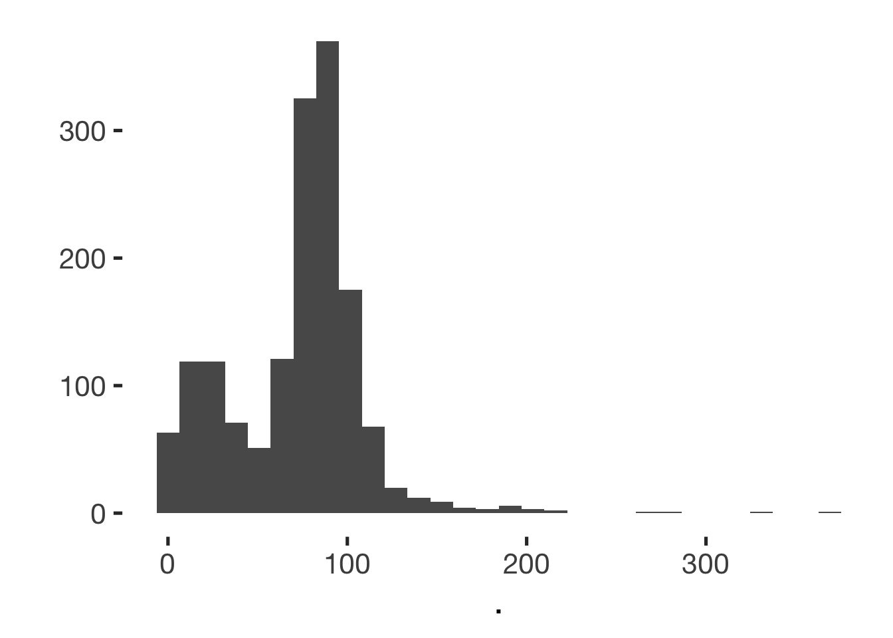
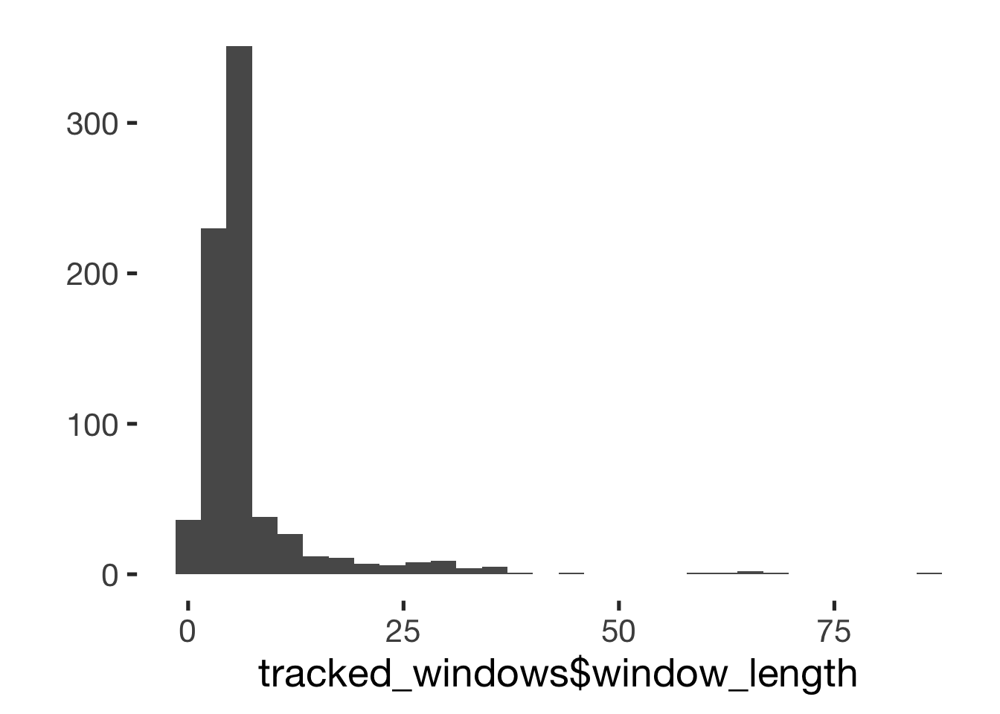
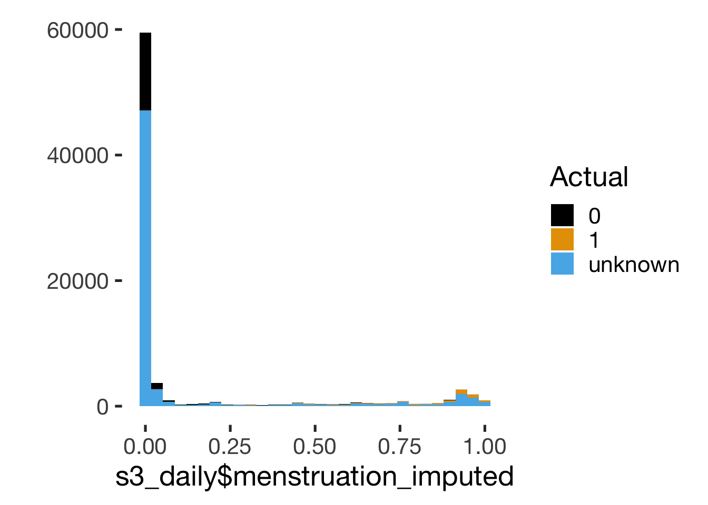
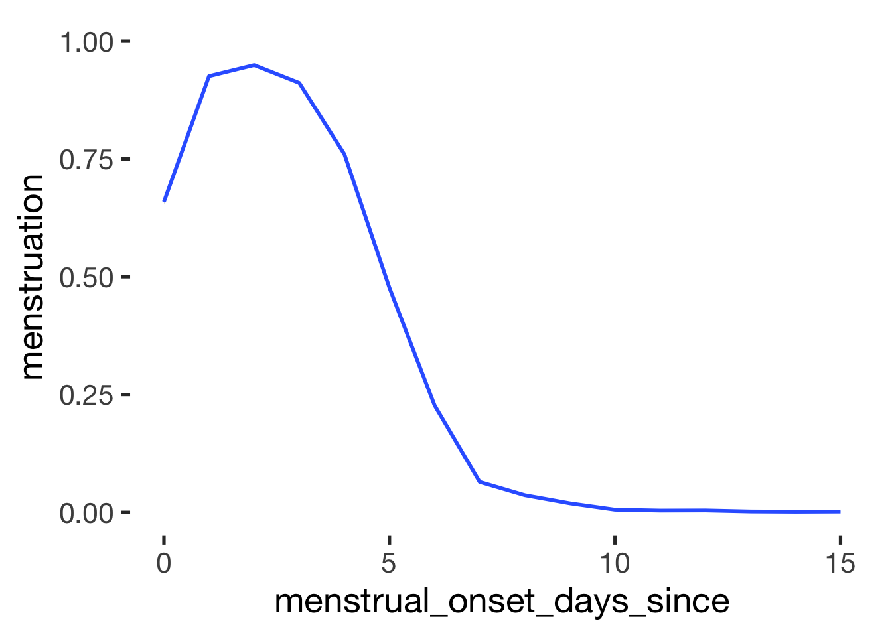

Data Wrangling
- Weekdays
- Menstrual phase
- Fertility estimation
- Contraception
- Singles vs couples
- Living situation
- Merge surveys
- Code open answer
- cycle length
- choice of contraception
- Fix variables
- Fertility awareness
- Merge diary
- Singles
- network
- Code open answers diary
- Social diary
- Sex dummy variables
- Final edits
- Sanity checks
- save
source("0_helpers.R")
library(tidylog)
knitr::opts_chunk$set(error = FALSE)
load("data/pretty_raw.rdata")
knit_print.alpha <- knitr:::knit_print.default
registerS3method("knit_print", "alpha", knit_print.alpha)Weekdays
s3_daily$weekday = format(as.POSIXct(s3_daily$created), format = "%w")
s3_daily$weekend <- ifelse(s3_daily$weekday %in% c(0,5,6), 1, 0)
s3_daily$weekday <- car::Recode(s3_daily$weekday, "0='Sunday';1='Monday';2='Tuesday';3='Wednesday';4='Thursday';5='Friday';6='Saturday'",as.factor =T, levels = c('Monday','Tuesday','Wednesday','Thursday','Friday','Saturday','Sunday'))
hour_string_to_period = function(hour_string) {
duration(as.numeric(stringr::str_sub(hour_string, 1,2)), units = "hours") + duration(as.numeric(stringr::str_sub(hour_string, 4,5)), units = "minutes")
}
s3_daily$sleep_awoke_time = hour_string_to_period(s3_daily$sleep_awoke_time)
s3_daily$sleep_fell_asleep_time = hour_string_to_period(s3_daily$sleep_fell_asleep_time)
s3_daily$sleep_duration = ifelse(
s3_daily$sleep_awoke_time >= s3_daily$sleep_fell_asleep_time,
s3_daily$sleep_awoke_time - s3_daily$sleep_fell_asleep_time,
dhours(24) - s3_daily$sleep_fell_asleep_time + s3_daily$sleep_awoke_time
) / 60 / 60## Note: method with signature 'Duration#ANY' chosen for function '-',
## target signature 'Duration#Duration'.
## "ANY#Duration" would also be valids3_daily = s3_daily %>%
mutate(created_date = as.Date(created - hours(10))) %>% # don't count night time as next day
group_by(session) %>%
mutate(first_diary_day = min(created_date)) %>%
ungroup()## mutate: new variable 'created_date' with 325 unique values and 0% NA## group_by: one grouping variable (session)## mutate (grouped): new variable 'first_diary_day' with 208 unique values and 0% NA## ungroup: no grouping variablesstopifnot(s3_daily %>% drop_na(session, created_date) %>%
group_by(session, created_date) %>% filter(n()>1) %>% nrow() == 0)## drop_na: no rows removed## group_by: 2 grouping variables (session, created_date)## filter (grouped): removed all rows (100%)Menstrual phase
## mutate: new variable 'ended_date' with 216 unique values and 3% NA# s1_demo %>%
# filter(menstruation_last < ended_date - days(40)) %>%
# select(menstruation_last, ended_date, menstruation_last_certainty, contraception_method)
s1_menstruation_start = s1_demo %>% filter(!is.na(menstruation_last)) %>%
filter(menstruation_last >= ended_date - days(40)) %>% # only last menstruation that weren't ages ago
mutate(created_date = as.Date(created)) %>%
select(session, created_date, menstruation_last) %>% rename(menstrual_onset_date_inferred = menstruation_last)## filter: removed 355 rows (21%), 1,305 rows remaining## filter: removed 19 rows (1%), 1,286 rows remaining## mutate: new variable 'created_date' with 202 unique values and 0% NA## select: dropped 103 variables (created, modified, ended, expired, info_study, …)## rename: renamed one variable (menstrual_onset_date_inferred)s5_hadmenstruation = s5_hadmenstruation %>%
filter(!is.na(last_menstrual_onset_date)) %>%
mutate(created_date = as.Date(created)) %>%
select(session, created_date, last_menstrual_onset_date) %>% rename(menstrual_onset_date_inferred = last_menstrual_onset_date) %>%
filter(!duplicated(session))## filter: removed 127 rows (22%), 443 rows remaining## mutate: new variable 'created_date' with 153 unique values and 0% NA## select: dropped 6 variables (created, modified, ended, expired, had_menstrual_bleeding, …)## rename: renamed one variable (menstrual_onset_date_inferred)## filter: removed one row (<1%), 442 rows remaining##
## FALSE
## 442Fertility estimation
LH surges and sex hormones
lab = readxl::read_xlsx("data/Datensatz_Zyklusstudie_Labor.xlsx")
lab = lab %>%
rename(created_date = `Datum Lab Session`) %>%
filter(!is.na(`VPN-CODE`), !is.na(created_date)) %>%
mutate(short = str_sub(Tagebuchcode, 1, 7),
lab_only_no_diary = is.na(short),
short = if_else(is.na(short), `VPN-CODE`, short),
created_date = as.Date(created_date),
`Date LH surge` = as.Date(if_else(`Date LH surge` == "xxx", NA_real_, as.numeric(`Date LH surge`)), origin = "1899-12-30")) # some excel problem, where nrs are repeated at end, so we shorten it## rename: renamed one variable (created_date)## filter: removed 37 rows (6%), 628 rows remaining## mutate: converted 'created_date' from double to Date (0 new NA)## converted 'Date LH surge' from character to Date (33 new NA)## new variable 'short' with 157 unique values and 0% NA## new variable 'lab_only_no_diary' with 2 unique values and 0% NAlab %>% mutate(n_women = n_distinct(`VPN-CODE`),
n_diary_participants = n_distinct(str_sub(Tagebuchcode, 1, 7), na.rm = T)) %>%
group_by(n_women,n_diary_participants, `VPN-CODE`) %>%
summarise(days = n(), surges = n_nonmissing(`Date LH surge`)) %>%
select(-`VPN-CODE`) %>%
summarise_all(mean)## mutate: new variable 'n_women' with one unique value and 0% NA## new variable 'n_diary_participants' with one unique value and 0% NA## group_by: 3 grouping variables (n_women, n_diary_participants, VPN-CODE)## summarise: now 159 rows and 5 columns, 2 group variables remaining (n_women, n_diary_participants)## select: dropped one variable (VPN-CODE)## summarise_all: now one row and 4 columns, one group variable remaining (n_women)## # A tibble: 1 x 4
## n_women n_diary_participants days surges
## <int> <int> <dbl> <dbl>
## 1 159 149 3.95 1.77## [1] 8## [1] 19## [1] 1235# setdiff(lab$short, s1_demo$short_demo) %>% unique() # all codes found
lab <- lab %>% filter(!lab_only_no_diary) %>% select(-lab_only_no_diary)## filter: removed 32 rows (5%), 596 rows remaining## select: dropped one variable (lab_only_no_diary)## select: dropped 152 variables (created, modified, ended, expired, browser, …)## filter: removed all rows (100%)## inner_join: added 51 columns (VPN-CODE, Tagebuchcode, VPN-Zahl, created_date, Uhrzeit, …)## > rows only in x (1,235)## > rows only in y ( 44)## > matched rows 552 (includes duplicates)## > =======## > rows total 552## filter: removed all rows (100%)## filter: removed all rows (100%)s3_daily <- s3_daily %>% full_join(lab %>% select(-`Date LH surge`, -`Menstrual Onset`), by = c("session", "short", "created_date"), suffixes = c("_diary", "_lab"))## select: dropped 2 variables (Date LH surge, Menstrual Onset)## full_join: added 48 columns (VPN-CODE, Tagebuchcode, VPN-Zahl, Uhrzeit, exclude_luteal_too_long, …)## > rows only in x 62,307## > rows only in y 193## > matched rows 359## > ========## > rows total 62,859## select: dropped all variables## [1] 0## select: dropped 200 variables (session, created, modified, expired, browser, …)## # A tibble: 5 x 5
## description ended `IBL_Estradiol pg/ml` var_miss n_miss
## <chr> <dbl> <dbl> <dbl> <dbl>
## 1 Missing values per variable 1672 62337 64009 64009
## 2 Missing values in 1 variables 1 0 1 60851
## 3 Missing values in 2 variables 0 0 2 1486
## 4 Missing values in 0 variables 1 1 0 336
## 5 Missing values in 1 variables 0 1 1 186s3_daily <- s3_daily %>%
full_join(
lab %>%
filter(!is.na(`Date LH surge`), exclude_luteal_too_long == 0) %>%
mutate(created_date = `Date LH surge`) %>%
select(session, short, created_date, `Date LH surge`),
by = c("session", "short", "created_date"), suffixes = c("_diary", "_lab"))## filter: removed 322 rows (58%), 230 rows remaining## mutate: changed 159 values (69%) of 'created_date' (0 new NA)## select: dropped 49 variables (VPN-CODE, Tagebuchcode, VPN-Zahl, Uhrzeit, exclude_luteal_too_long, …)## full_join: added one column (Date LH surge)## > rows only in x 62,684## > rows only in y 55## > matched rows 175## > ========## > rows total 62,914## filter: removed all rows (100%)# because of the typos in the lab session codes, we have to merge the long ones back on
xtabs(~ is.na(session) + is.na(`VPN-CODE`), data = s3_daily)## is.na(`VPN-CODE`)
## is.na(session) FALSE TRUE
## FALSE 552 62362## is.na(`VPN-CODE`)
## is.na(short) FALSE TRUE
## FALSE 552 62362## is.na(`VPN-CODE`)
## is.na(ended) FALSE TRUE
## FALSE 354 60833
## TRUE 198 1529## is.na(`Progesterone pg/ml`)
## is.na(ended) FALSE TRUE
## FALSE 329 60858
## TRUE 180 1547#
# diary %>% filter(!is.na(Age)) %>%
# select(short, Age, age, relationship_status, Relationship_status, `MEAN Größe`, `MEAN Gewicht`, height, weight) %>%
# group_by(short) %>%
# summarise_all(first) %>%
# distinct() %>%
# mutate(age_diff = abs(Age - age),
# height_diff = abs(height- `MEAN Größe`),
# weight_diff = abs(weight - `MEAN Gewicht`),
# rel_diff = abs(relationship_status - Relationship_status)) %>%
# arrange(age_diff) %>% ViewCenter sex hormones
We remove outliers that are more than 3 SD from the mean and center within groups (logged and non-logged).
outliers_to_missing <- function(x, sd_multiplier = 3) {
if_else(x > (mean(x, na.rm = T) + sd_multiplier * sd(x, na.rm = T)) |
x < (mean(x, na.rm = T) - sd_multiplier * sd(x, na.rm = T)),
NA_real_, x)
}
s3_daily <- s3_daily %>%
ungroup() %>%
mutate(
`Progesterone pg/ml` = outliers_to_missing(`Progesterone pg/ml`),
`Estradiol pg/ml` = outliers_to_missing(`Estradiol pg/ml`),
`IBL_Estradiol pg/ml` = outliers_to_missing(`IBL_Estradiol pg/ml`),
`Testosterone pg/ml` = outliers_to_missing(`Testosterone pg/ml`),
`Cortisol nmol/l` = outliers_to_missing(`Cortisol nmol/l`)
) %>%
group_by(session) %>%
mutate(
progesterone_mean = mean(`Progesterone pg/ml`, na.rm = T),
`progesterone_diff` = `Progesterone pg/ml` - progesterone_mean,
progesterone_log_mean = mean(log(`Progesterone pg/ml`), na.rm = T),
progesterone_log_diff = log(`Progesterone pg/ml`) - progesterone_log_mean,
estradiol_mean = mean(`Estradiol pg/ml`, na.rm = T),
estradiol_diff = `Estradiol pg/ml` - estradiol_mean,
estradiol_log_mean = mean(log(`Estradiol pg/ml`), na.rm = T),
estradiol_log_diff = log(`Estradiol pg/ml`) - estradiol_log_mean,
ibl_estradiol_mean = mean(`IBL_Estradiol pg/ml`, na.rm = T),
ibl_estradiol_diff = `IBL_Estradiol pg/ml` - ibl_estradiol_mean,
ibl_estradiol_log_mean = mean(log(`IBL_Estradiol pg/ml`), na.rm = T),
ibl_estradiol_log_diff = log(`IBL_Estradiol pg/ml`) - ibl_estradiol_log_mean,
testosterone_mean = mean(`Testosterone pg/ml`, na.rm = T),
testosterone_diff = `Testosterone pg/ml` - testosterone_mean,
testosterone_log_mean = mean(log(`Testosterone pg/ml`), na.rm = T),
testosterone_log_diff = log(`Testosterone pg/ml`) - testosterone_log_mean,
cortisol_mean = mean(`Cortisol nmol/l`, na.rm = T),
cortisol_diff = `Cortisol nmol/l` - cortisol_mean,
cortisol_log_mean = mean(log(`Cortisol nmol/l`), na.rm = T),
cortisol_log_diff = log(`Cortisol nmol/l`) - cortisol_log_mean
) %>%
ungroup()## ungroup: no grouping variables## mutate: changed 10 values (<1%) of 'Cortisol nmol/l' (10 new NA)## changed 5 values (<1%) of 'Testosterone pg/ml' (5 new NA)## changed 8 values (<1%) of 'Progesterone pg/ml' (8 new NA)## changed 4 values (<1%) of 'Estradiol pg/ml' (4 new NA)## changed 7 values (<1%) of 'IBL_Estradiol pg/ml' (7 new NA)## group_by: one grouping variable (session)## mutate (grouped): new variable 'progesterone_mean' with 139 unique values and 88% NA## new variable 'progesterone_diff' with 500 unique values and 99% NA## new variable 'progesterone_log_mean' with 139 unique values and 88% NA## new variable 'progesterone_log_diff' with 500 unique values and 99% NA## new variable 'estradiol_mean' with 75 unique values and 93% NA## new variable 'estradiol_diff' with 72 unique values and >99% NA## new variable 'estradiol_log_mean' with 75 unique values and 93% NA## new variable 'estradiol_log_diff' with 72 unique values and >99% NA## new variable 'ibl_estradiol_mean' with 139 unique values and 88% NA## new variable 'ibl_estradiol_diff' with 516 unique values and 99% NA## new variable 'ibl_estradiol_log_mean' with 139 unique values and 88% NA## new variable 'ibl_estradiol_log_diff' with 516 unique values and 99% NA## new variable 'testosterone_mean' with 139 unique values and 88% NA## new variable 'testosterone_diff' with 515 unique values and 99% NA## new variable 'testosterone_log_mean' with 139 unique values and 88% NA## new variable 'testosterone_log_diff' with 527 unique values and 99% NA## new variable 'cortisol_mean' with 139 unique values and 88% NA## new variable 'cortisol_diff' with 533 unique values and 99% NA## new variable 'cortisol_log_mean' with 139 unique values and 88% NA## new variable 'cortisol_log_diff' with 541 unique values and 99% NA## ungroup: no grouping variablesFertility awareness
tracked_windows <- s4_followup %>% select(short, starts_with("aware_fertile"), -ends_with("block"), -aware_fertile_reason_unusual, -aware_fertile_effects) %>%
filter(aware_fertile_phases_number > 0) %>%
mutate_all(as.character) %>%
gather(cycle, date, -short, -aware_fertile_phases_number) %>%
tbl_df() %>%
mutate(cycle = str_sub(cycle, str_length("aware_fertile_") + 1)) %>%
separate(cycle, c("cycle", "startend")) %>%
mutate(date = as.Date(date)) %>%
spread(startend, date) %>%
mutate(window_length = end - start,
date_of_ovulation_awareness = end - days(1))## select: dropped 37 variables (session, created, modified, ended, expired, …)## filter: removed 867 rows (74%), 304 rows remaining## mutate_all: converted 'aware_fertile_phases_number' from double to character (0 new NA)## converted 'aware_fertile_1_start' from Date to character (0 new NA)## converted 'aware_fertile_1_end' from Date to character (0 new NA)## converted 'aware_fertile_2_start' from Date to character (0 new NA)## converted 'aware_fertile_2_end' from Date to character (0 new NA)## converted 'aware_fertile_3_start' from Date to character (0 new NA)## converted 'aware_fertile_3_end' from Date to character (0 new NA)## gather: reorganized (aware_fertile_1_start, aware_fertile_1_end, aware_fertile_2_start, aware_fertile_2_end, aware_fertile_3_start, …) into (cycle, date) [was 304x8, now 1824x4]## mutate: changed 1,824 values (100%) of 'cycle' (0 new NA)## mutate: converted 'date' from character to Date (0 new NA)## spread: reorganized (startend, date) into (end, start) [was 1824x5, now 912x5]## mutate: new variable 'window_length' with 44 unique values and 18% NA## new variable 'date_of_ovulation_awareness' with 243 unique values and 18% NAs3_daily <- s3_daily %>% left_join( tracked_windows %>%
select(short, window_length, date_of_ovulation_awareness) %>%
mutate(created_date = date_of_ovulation_awareness), by = c("short", "created_date"))## select: dropped 4 variables (aware_fertile_phases_number, cycle, end, start)## mutate: new variable 'created_date' with 243 unique values and 18% NA## left_join: added 2 columns (window_length, date_of_ovulation_awareness)## > rows only in x 62,369## > rows only in y ( 367)## > matched rows 545## > ========## > rows total 62,914Compute menstrual onsets
To compute menstrual onsets from the diary data, we have to clear a few hurdles:
- diaries could be filled out until 3 am (and later in special cases), but participants will tend to count backwards from the preceding day when asked when the last menstruation occurred
- we asked women only every ~3 days about menstruation (-> interpolate)
- women could report the same menstrual onset several times (-> use the report closest to the onset, more accurate)
- women reported a last menstrual onset in the demographic questionnaire preceding the diary and in the follow-up survey following the diary
- we need to count backward and forward from each menstrual onset
- we need to include the dates from the demographic and the follow-up questionnaire without overwriting more pertinent dates from the diary
- we want to “bridge gaps” between reports of menstruation that are at most 40 days wide (because wider gaps probably mean that there was something going on with the menstrual cycle such as a miscarriage, menopause, etc.)
Therefore we use a multi-step procedure:
- Collect unique menstrual onsets reported by each woman from pre-survey, diary, and post-survey
- Expand the onsets into time-series by participant.
- “Merge”/prefer reports closer to the onset when several different reports were made
- Count forward & backward.
- Assign cycle numbers.
- Merge on participant & created_date.
# step 1
menstrual_onsets = s3_daily %>%
group_by(session) %>%
arrange(created) %>%
mutate(
menstrual_onset_date = as.Date(menstrual_onset_date),
menstrual_onset_date_inferred = as.Date(ifelse(!is.na(menstrual_onset_date),
menstrual_onset_date, # if date was given, take it
ifelse(!is.na(menstrual_onset), # if days ago was given
created_date - days(menstrual_onset - 1), # subtract them from current date
as.Date(NA))
), origin = "1970-01-01")
) %>%
select(session, created_date, menstrual_onset_date_inferred) %>%
filter(!is.na(menstrual_onset_date_inferred)) %>%
unique()## group_by: one grouping variable (session)## mutate (grouped): changed 0 values (0%) of 'menstrual_onset_date' (0 new NA)## new variable 'menstrual_onset_date_inferred' with 276 unique values and 93% NA## select: dropped 223 variables (created, modified, ended, expired, browser, …)## filter (grouped): removed 58,763 rows (93%), 4,151 rows remaining## add in the menstrual onsets we got from the pre and post survey and the lab
lab_onsets <- lab %>% select(session, created_date, menstrual_onset_date_inferred = `Menstrual Onset`) %>%
mutate(menstrual_onset_date_inferred = as.Date(menstrual_onset_date_inferred)) %>%
filter(!is.na(menstrual_onset_date_inferred))## select: renamed one variable (menstrual_onset_date_inferred) and dropped 50 variables## mutate: converted 'menstrual_onset_date_inferred' from double to Date (0 new NA)## filter: no rows removedmons = menstrual_onsets %>%
select(session, created_date, menstrual_onset_date_inferred) %>%
mutate(date_origin = "diary") %>%
bind_rows(
s1_menstruation_start %>% mutate(date_origin = "demo"),
s5_hadmenstruation %>% mutate(date_origin = "followup"),
lab_onsets %>% mutate(date_origin = "lab")
) %>%
filter( !is.na(menstrual_onset_date_inferred)) %>%
arrange(session, menstrual_onset_date_inferred, created_date) %>%
unique() %>%
group_by(session) %>%
# step 3: prefer reports closer to event if they conflict
mutate(
onset_diff = abs( as.double( lag(menstrual_onset_date_inferred) - menstrual_onset_date_inferred, units = "days")), # was there a change compared to the last reported menstrual onset (first one gets NA)
menstrual_onset_date_inferred = if_else(onset_diff < 7, # if last date is known, but is slightly different from current date
as.Date(NA), # attribute it to memory, not extremely short cycle, use fresher date
menstrual_onset_date_inferred, # if it's a big difference, use the current date
menstrual_onset_date_inferred # use current date if last date not known/first onset
) # if no date is assigned today, keep it like that
) %>% # carry the last MO forward
# mutate(created_date = menstrual_onset_date_inferred) %>%
filter(!is.na(menstrual_onset_date_inferred))## select: no changes## mutate (grouped): new variable 'date_origin' with one unique value and 0% NA## mutate: new variable 'date_origin' with one unique value and 0% NA
## mutate: new variable 'date_origin' with one unique value and 0% NA
## mutate: new variable 'date_origin' with one unique value and 0% NA## filter (grouped): no rows removed## group_by: one grouping variable (session)## mutate (grouped): changed 2,604 values (40%) of 'menstrual_onset_date_inferred' (2604 new NA)## new variable 'onset_diff' with 104 unique values and 20% NA## filter (grouped): removed 2,604 rows (40%), 3,827 rows remaining## [1] 3827# mons %>% filter(created_date < menstrual_onset_date_inferred) %>% View
mons %>% group_by(session, created_date) %>% filter(n()> 1)## group_by: 2 grouping variables (session, created_date)## filter (grouped): removed 3,823 rows (>99%), 4 rows remaining## # A tibble: 4 x 5
## session created_date menstrual_onset_date_in… date_origin onset_diff
## <chr> <date> <date> <chr> <dbl>
## 1 -QE3RufkOaQJi-Gdcfrron_w1D-1zp9PBFbVmbBgbiNS09… 2016-10-17 2016-10-05 demo NA
## 2 -QE3RufkOaQJi-Gdcfrron_w1D-1zp9PBFbVmbBgbiNS09… 2016-10-17 2016-11-05 lab 31
## 3 jWdPyo_IKd4KJfTpZNMQ_1vdfAvhO3-82Y7qnm-nHRE6Q9… 2016-09-19 2016-09-02 demo NA
## 4 jWdPyo_IKd4KJfTpZNMQ_1vdfAvhO3-82Y7qnm-nHRE6Q9… 2016-09-19 2016-09-29 lab 27## distinct (grouped): removed 2 rows (<1%), 3,825 rows remaining## [1] 3825## group_by: one grouping variable (session)## filter (grouped): removed 3,293 rows (86%), 534 rows remaining## # A tibble: 534 x 5
## session created_date menstrual_onset_date_in… date_origin onset_diff
## <chr> <date> <date> <chr> <dbl>
## 1 _EQ98zBViYQhrRRoVXVag6gA3YYU_xkE0kQaCOhlsV24N… 2016-10-27 2016-10-05 demo NA
## 2 _EQ98zBViYQhrRRoVXVag6gA3YYU_xkE0kQaCOhlsV24N… 2016-11-03 2016-11-03 diary 29
## 3 _EQ98zBViYQhrRRoVXVag6gA3YYU_xkE0kQaCOhlsV24N… 2016-11-14 2016-12-01 lab 27
## 4 _EQ98zBViYQhrRRoVXVag6gA3YYU_xkE0kQaCOhlsV24N… 2017-01-04 2016-12-31 diary 30
## 5 -QE3RufkOaQJi-Gdcfrron_w1D-1zp9PBFbVmbBgbiNS0… 2016-10-17 2016-10-05 demo NA
## 6 -QE3RufkOaQJi-Gdcfrron_w1D-1zp9PBFbVmbBgbiNS0… 2016-10-17 2016-11-05 lab 31
## 7 -QE3RufkOaQJi-Gdcfrron_w1D-1zp9PBFbVmbBgbiNS0… 2016-11-17 2016-12-03 lab 28
## 8 -QE3RufkOaQJi-Gdcfrron_w1D-1zp9PBFbVmbBgbiNS0… 2017-01-02 2017-01-02 followup 30
## 9 10tuOUPxebpLQWXZk93kcys9TipSZaW1wqtXV30ynk8Ey… 2016-05-03 2016-04-02 demo NA
## 10 10tuOUPxebpLQWXZk93kcys9TipSZaW1wqtXV30ynk8Ey… 2016-05-09 2016-05-09 diary 37
## # … with 524 more rows# mons %>% filter(session %starts_with% "2x-juq") %>% View()
# now turn our dataset of menstrual onsets into full time series
menstrual_days = mons %>% distinct(session, created_date) %>%
arrange(session, created_date) %>%
# step 2 expand into time-series for participant
full_join(s3_daily %>% select(session, created_date), by = c("session", "created_date")) %>%
full_join(mons %>% mutate(created_date = menstrual_onset_date_inferred), by = c("session", "created_date")) %>%
mutate(date_origin = if_else(is.na(date_origin), "not_onset", date_origin)) %>%
group_by(session) %>%
complete(created_date = full_seq(created_date, period = 1)) %>%
mutate(date_origin = if_else(is.na(date_origin), "unobserved_day", date_origin)) %>%
arrange(created_date) %>%
distinct(session, created_date, menstrual_onset_date_inferred, .keep_all = TRUE) %>%
arrange(session, created_date, menstrual_onset_date_inferred) %>%
distinct(session, created_date, .keep_all = TRUE)## distinct (grouped): removed 2 rows (<1%), 3,825 rows remaining## select: dropped 223 variables (created, modified, ended, expired, browser, …)## full_join: added no columns## > rows only in x 1,576## > rows only in y 60,665## > matched rows 2,249## > ========## > rows total 64,490## mutate (grouped): changed 3,377 values (88%) of 'created_date' (0 new NA)## full_join: added 3 columns (menstrual_onset_date_inferred, date_origin, onset_diff)## > rows only in x 62,654## > rows only in y 1,991## > matched rows 1,836## > ========## > rows total 66,481## mutate (grouped): changed 62,654 values (94%) of 'date_origin' (62654 fewer NA)## group_by: one grouping variable (session)## mutate (grouped): changed 44,337 values (40%) of 'date_origin' (44337 fewer NA)## distinct (grouped): no rows removed
## distinct (grouped): no rows removed##
## demo diary followup lab not_onset unobserved_day
## 1243 1884 417 283 62654 44337menstrual_days %>% filter(date_origin != "filledin") %>% group_by(session) %>% summarise(n = n()) %>% summarise(mean(n))## filter (grouped): no rows removed## group_by: one grouping variable (session)## summarise: now 1,545 rows and 2 columns, ungrouped## summarise: now one row and one column, ungrouped## # A tibble: 1 x 1
## `mean(n)`
## <dbl>
## 1 71.7## group_by: one grouping variable (session)## summarise: now 1,545 rows and 2 columns, ungrouped## summarise: now one row and one column, ungrouped## # A tibble: 1 x 1
## `mean(n)`
## <dbl>
## 1 71.7## group_by: one grouping variable (session)## summarise: now 1,545 rows and 2 columns, ungrouped## `stat_bin()` using `bins = 30`. Pick better value with `binwidth`.
menstrual_days %>% drop_na(session, created_date) %>%
group_by(session, created_date) %>% filter(n()>1) %>% nrow() %>% { . == 0} %>% stopifnot()## drop_na (grouped): no rows removed## group_by: 2 grouping variables (session, created_date)## filter (grouped): removed all rows (100%)# menstrual_onsets %>% filter(session == "_2efChMgmsXAYmalYlRY9epxS_wse0ytWYttV6tLi6FUd2FRENkr9JgVnmtzaMCs")
# mons %>% filter(session %starts_with% "_2sufSUfIWjNXg6xfRzJaCid9jzkY") %>% View()
# menstrual_onsets %>% filter(session %starts_with% "_2sufSUfIWjNXg6xfRzJaCid9jzkY") %>% View()
menstrual_days = menstrual_days %>%
group_by(session) %>%
mutate(
# carry the last observation (the last observed menstrual onset) backward/forward (within person), but we don't do this if we'd bridge more than 40 days this way
# first we carry it backward (because reporting is retrospective)
next_menstrual_onset = rcamisc::repeat_last(menstrual_onset_date_inferred, forward = FALSE),
# then we carry it forward
last_menstrual_onset = rcamisc::repeat_last(menstrual_onset_date_inferred),
# in the next cycle, count to the next onset, not the last
next_menstrual_onset = if_else(next_menstrual_onset == last_menstrual_onset,
lead(next_menstrual_onset),
next_menstrual_onset),
# calculate the diff to current date
menstrual_onset_days_until = as.numeric(created_date - next_menstrual_onset),
menstrual_onset_days_since = as.numeric(created_date - last_menstrual_onset)
)## group_by: one grouping variable (session)## mutate (grouped): new variable 'next_menstrual_onset' with 307 unique values and 29% NA## new variable 'last_menstrual_onset' with 338 unique values and 13% NA## new variable 'menstrual_onset_days_until' with 293 unique values and 29% NA## new variable 'menstrual_onset_days_since' with 293 unique values and 13% NAmenstrual_days %>% drop_na(session, created_date) %>%
group_by(session, created_date) %>% filter(n()>1) %>% nrow() %>% { . == 0} %>% stopifnot()## drop_na (grouped): no rows removed## group_by: 2 grouping variables (session, created_date)## filter (grouped): removed all rows (100%)avg_cycle_lengths = menstrual_days %>%
select(session, last_menstrual_onset, next_menstrual_onset) %>%
mutate(next_menstrual_onset_if_no_last = if_else(is.na(last_menstrual_onset), next_menstrual_onset, as.Date(NA_character_))) %>%
arrange(session, next_menstrual_onset_if_no_last, last_menstrual_onset) %>%
select(-next_menstrual_onset) %>%
distinct(session, last_menstrual_onset, next_menstrual_onset_if_no_last, .keep_all = TRUE) %>%
group_by(session) %>%
mutate(
number_of_cycles = n(),
cycle_nr = row_number(),
cycle_length = as.double(lead(last_menstrual_onset) - last_menstrual_onset, units = "days"),
cycle_nr_fully_observed = sum(!is.na(cycle_length)),
mean_cycle_length_diary = mean(cycle_length, na.rm = TRUE),
median_cycle_length_diary = median(cycle_length, na.rm = TRUE)) %>%
filter(!is.na(last_menstrual_onset) | !is.na(next_menstrual_onset_if_no_last))## select: dropped 6 variables (created_date, menstrual_onset_date_inferred, date_origin, onset_diff, menstrual_onset_days_until, …)## mutate (grouped): new variable 'next_menstrual_onset_if_no_last' with one unique value and 100% NA## select: dropped one variable (next_menstrual_onset)## distinct (grouped): removed 106,696 rows (96%), 4,122 rows remaining## group_by: one grouping variable (session)## mutate (grouped): new variable 'number_of_cycles' with 7 unique values and 0% NA## new variable 'cycle_nr' with 7 unique values and 0% NA## new variable 'cycle_length' with 97 unique values and 39% NA## new variable 'cycle_nr_fully_observed' with 6 unique values and 0% NA## new variable 'mean_cycle_length_diary' with 176 unique values and 14% NA## new variable 'median_cycle_length_diary' with 110 unique values and 14% NA## filter (grouped): removed 295 rows (7%), 3,827 rows remaining# avg_cycle_lengths %>% filter(session %starts_with% "_sqtMf5") %>% View("cycles")
table(is.na(avg_cycle_lengths$cycle_nr))##
## FALSE
## 3827# menstrual_onsets %>% filter(session %starts_with% "_2sufSUfIWjNXg6xfRzJaCid9jzkY") %>% View()
gaps <- s3_daily %>% filter(session %starts_with% "--_MgFd") %>% tbl_df() %>% pull(created_date) %>% diff() %>% as.numeric(.)## filter: removed 62,864 rows (>99%), 50 rows remainingstopifnot(!all(gaps == 1))
s3_daily <- s3_daily %>%
group_by(session) %>%
complete(created_date = full_seq(created_date, period = 1)) %>% # include the gap days in the diary (happens by default in formr, this just to ensure)
ungroup() %>%
mutate(diary_day_observation = case_when(
is.na(created) ~ "interpolated",
is.na(modified) ~ "not_answered",
!is.na(expired) ~ "started_not_finished",
is.na(ended) ~ "not_finished",
!is.na(ended) ~ "finished"
)) %>%
left_join(menstrual_days %>%
select(session, created_date, next_menstrual_onset, last_menstrual_onset, menstrual_onset_days_until, menstrual_onset_days_since, date_origin),
by = c("session", "created_date")
) %>%
mutate(
menstruation_today = if_else(menstruation_since_last_entry == 1, as.numeric(menstruation_today), 0),
menstruation_labelled = factor(if_else(! is.na(menstruation_today),
if_else(menstruation_today == 1, "yes", "no"),
if_else(menstrual_onset_days_since <= 5,
if_else(menstrual_onset_days_since == 0, "yes", "probably", "no"),
"no", "no")),
levels = c('yes', 'probably', 'no'))
) %>%
mutate(next_menstrual_onset_if_no_last = if_else(is.na(last_menstrual_onset), next_menstrual_onset, as.Date(NA_character_)))## group_by: one grouping variable (session)## ungroup: no grouping variables## mutate: new variable 'diary_day_observation' with 5 unique values and 0% NA## select: dropped 2 variables (menstrual_onset_date_inferred, onset_diff)## left_join: added 5 columns (next_menstrual_onset, last_menstrual_onset, menstrual_onset_days_until, menstrual_onset_days_since, date_origin)## > rows only in x 0## > rows only in y (31,569)## > matched rows 79,249## > ========## > rows total 79,249## mutate: changed 13,848 values (17%) of 'menstruation_today' (13848 fewer NA)## new variable 'menstruation_labelled' with 3 unique values and 0% NA## mutate: new variable 'next_menstrual_onset_if_no_last' with one unique value and 100% NAgaps <- s3_daily %>% filter(session %starts_with% "--_MgFd") %>% tbl_df() %>% pull(created_date) %>% diff() %>% as.numeric(.)## filter: removed 79,182 rows (>99%), 67 rows remainingstopifnot(all(gaps == 1))
s3_daily <- s3_daily %>%
group_by(session) %>%
mutate(first_diary_day = first(na.omit(first_diary_day)),
day_number = round(as.numeric(as.Date(created_date) - first_diary_day, unit = 'days'))) %>%
ungroup()## group_by: one grouping variable (session)## mutate (grouped): changed 16,583 values (21%) of 'first_diary_day' (16583 fewer NA)## new variable 'day_number' with 408 unique values and 0% NA## ungroup: no grouping variables# s3_daily %>% filter(is.na(day_number)) %>% select(session, short, created_date, ended, first_diary_day) %>% arrange(short, created_date) %>% View
table(s3_daily$day_number, exclude = NULL)##
## -263 -262 -261 -260 -259 -258 -257 -256 -255 -254 -253 -252 -251 -250 -249 -248 -247 -246 -245 -244 -243 -242
## 1 1 1 1 1 1 1 1 1 1 1 1 1 1 1 1 1 1 1 1 1 1
## -241 -240 -239 -238 -237 -236 -235 -234 -233 -232 -231 -230 -229 -228 -227 -226 -225 -224 -223 -222 -221 -220
## 1 1 1 1 1 1 1 1 1 1 1 1 1 1 1 1 1 1 1 1 1 1
## -219 -218 -217 -216 -215 -214 -213 -212 -211 -210 -209 -208 -207 -206 -205 -204 -203 -202 -201 -200 -199 -198
## 1 1 1 1 1 1 1 1 1 1 2 2 2 2 2 2 2 2 2 2 2 2
## -197 -196 -195 -194 -193 -192 -191 -190 -189 -188 -187 -186 -185 -184 -183 -182 -181 -180 -179 -178 -177 -176
## 2 2 2 2 2 2 2 2 2 2 2 2 2 2 2 2 2 2 2 2 2 2
## -175 -174 -173 -172 -171 -170 -169 -168 -167 -166 -165 -164 -163 -162 -161 -160 -159 -158 -157 -156 -155 -154
## 2 2 2 2 2 2 2 2 2 2 2 2 2 2 2 2 2 2 2 2 2 2
## -153 -152 -151 -150 -149 -148 -147 -146 -145 -144 -143 -142 -141 -140 -139 -138 -137 -136 -135 -134 -133 -132
## 2 2 2 2 2 2 2 2 2 2 2 2 2 2 2 2 2 2 2 2 2 2
## -131 -130 -129 -128 -127 -126 -125 -124 -123 -122 -121 -120 -119 -118 -117 -116 -115 -114 -113 -112 -111 -110
## 2 2 2 2 2 2 2 2 2 2 2 2 2 2 2 2 2 2 2 2 2 2
## -109 -108 -107 -106 -105 -104 -103 -102 -101 -100 -99 -98 -97 -96 -95 -94 -93 -92 -91 -90 -89 -88
## 2 2 2 2 2 2 2 2 2 2 2 2 2 2 2 2 2 2 2 2 2 2
## -87 -86 -85 -84 -83 -82 -81 -80 -79 -78 -77 -76 -75 -74 -73 -72 -71 -70 -69 -68 -67 -66
## 2 2 2 2 2 2 2 2 2 2 2 2 2 2 4 4 4 4 4 4 4 4
## -65 -64 -63 -62 -61 -60 -59 -58 -57 -56 -55 -54 -53 -52 -51 -50 -49 -48 -47 -46 -45 -44
## 4 4 4 4 4 4 5 5 5 5 5 5 5 5 6 6 6 6 6 6 6 7
## -43 -42 -41 -40 -39 -38 -37 -36 -35 -34 -33 -32 -31 -30 -29 -28 -27 -26 -25 -24 -23 -22
## 7 8 8 8 9 10 11 11 11 11 11 11 11 12 13 13 13 13 14 14 15 17
## -21 -20 -19 -18 -17 -16 -15 -14 -13 -12 -11 -10 -9 -8 -7 -6 -5 -4 -3 -2 -1 0
## 17 17 18 20 20 20 21 22 22 23 24 24 25 25 27 28 28 32 33 34 40 1373
## 1 2 3 4 5 6 7 8 9 10 11 12 13 14 15 16 17 18 19 20 21 22
## 1339 1326 1314 1310 1303 1294 1288 1284 1277 1266 1256 1250 1242 1232 1227 1222 1212 1205 1199 1189 1175 1166
## 23 24 25 26 27 28 29 30 31 32 33 34 35 36 37 38 39 40 41 42 43 44
## 1162 1155 1150 1143 1138 1133 1131 1126 1123 1113 1110 1107 1104 1099 1094 1090 1084 1080 1075 1068 1065 1056
## 45 46 47 48 49 50 51 52 53 54 55 56 57 58 59 60 61 62 63 64 65 66
## 1049 1045 1040 1035 1030 1027 1025 1019 1014 1006 1001 996 989 981 974 969 964 953 940 932 909 873
## 67 68 69 70 71 72 73 74 75 76 77 78 79 80 81 82 83 84 85 86 87 88
## 838 737 575 88 30 29 29 28 26 25 24 22 22 22 20 20 20 18 16 14 13 13
## 89 90 91 92 93 94 95 96 97 98 99 100 101 102 103 104 105 106 107 108 109 110
## 13 13 12 11 11 10 8 8 8 7 7 7 7 7 7 7 7 6 6 6 5 5
## 111 112 113 114 115 116 117 118 119 120 121 122 123 124 125 126 127 128 129 130 131 132
## 5 5 4 3 3 3 3 3 3 3 3 2 2 2 2 2 2 2 2 2 2 2
## 133 134 135 136 137 138 139 140 141 142 143 144
## 2 2 1 1 1 1 1 1 1 1 1 1## drop_na: removed 18,062 rows (23%), 61,187 rows remaining##
## 0 1 2 3 4 5 6 7 8 9 10 11 12 13 14 15 16 17 18 19 20 21
## 1324 1137 1132 1104 1121 1102 1092 1095 1057 1035 1027 1038 1028 1009 1001 982 975 997 959 940 965 933
## 22 23 24 25 26 27 28 29 30 31 32 33 34 35 36 37 38 39 40 41 42 43
## 935 893 903 911 886 893 878 891 854 872 857 863 859 839 834 798 819 808 826 814 809 775
## 44 45 46 47 48 49 50 51 52 53 54 55 56 57 58 59 60 61 62 63 64 65
## 784 777 781 786 793 767 756 761 749 761 758 767 740 733 736 739 739 737 746 734 718 718
## 66 67 68 69 70
## 706 723 703 549 56## drop_na: removed 18,062 rows (23%), 61,187 rows remainingstopifnot(s3_daily %>% drop_na(session, day_number) %>% group_by(session, day_number) %>% filter(n() > 1) %>% nrow() == 0)## drop_na: no rows removed## group_by: 2 grouping variables (session, day_number)## filter (grouped): removed all rows (100%)gaps <- s3_daily %>%
drop_na(session) %>%
group_by(session) %>%
summarise(no_gaps = all(as.numeric(diff(created_date)) == 1),
n = n(),
range = paste(range(day_number), collapse = '-'))## drop_na: no rows removed## group_by: one grouping variable (session)## summarise: now 1,373 rows and 4 columns, ungroupedEstimate day of ovulation
# s3_daily %>% filter(short == "_sqtMf5") %>% select(short, created_date, ended, menstruation_labelled, next_menstrual_onset_if_no_last, last_menstrual_onset) %>% View("days")
s3_daily <- s3_daily %>%
left_join(avg_cycle_lengths, by = c("session", "last_menstrual_onset", "next_menstrual_onset_if_no_last")) %>%
left_join(s1_demo %>% select(session, menstruation_length), by = 'session') %>%
mutate(
next_menstrual_onset_inferred = last_menstrual_onset + days(menstruation_length),
RCD_inferred = as.numeric(created_date - next_menstrual_onset_inferred)
)## left_join: added 6 columns (number_of_cycles, cycle_nr, cycle_length, cycle_nr_fully_observed, mean_cycle_length_diary, …)## > rows only in x 13,745## > rows only in y ( 670)## > matched rows 65,504## > ========## > rows total 79,249## select: dropped 103 variables (created, modified, ended, expired, info_study, …)## left_join: added one column (menstruation_length)## > rows only in x 0## > rows only in y ( 287)## > matched rows 79,249## > ========## > rows total 79,249## mutate: new variable 'next_menstrual_onset_inferred' with 304 unique values and 18% NA## new variable 'RCD_inferred' with 186 unique values and 18% NAs3_daily %>% filter(short == "_sqtMf5", created_date == "2016-08-25") %>% pull(cycle_nr) %>% is.na() %>% isFALSE() %>% stopifnot()## filter: removed 79,248 rows (>99%), one row remaining## is.na(s3_daily$cycle_nr)
## s3_daily$diary_day_observation FALSE TRUE
## finished 51225 9962
## interpolated 13074 3509
## not_answered 501 122
## not_finished 5 0
## started_not_finished 699 152s3_daily <- s3_daily %>%
group_by(session, cycle_nr) %>%
mutate(
luteal_BC = if_else(menstrual_onset_days_until >= -15, 1, 0),
follicular_FC = if_else(menstrual_onset_days_since <= 15, 1, 0)
) %>%
mutate(
day_lh_surge = if_else(created_date == `Date LH surge`, 1, 0),
day_of_ovulation = if_else(menstrual_onset_days_until == -15, 1, 0),
day_of_ovulation_inferred = if_else(RCD_inferred == -15, 1, 0),
day_of_ovulation_forward_counted = if_else(menstrual_onset_days_since == 14, 1, 0),
date_of_ovulation_BC = min(if_else(day_of_ovulation == 1, created_date, structure(NA_real_, class="Date")), na.rm = TRUE),
date_of_ovulation_inferred = min(if_else(day_of_ovulation_inferred == 1, created_date, structure(NA_real_, class="Date")), na.rm = TRUE),
date_of_ovulation_forward_counted = min(if_else(day_of_ovulation_forward_counted == 1, created_date, structure(NA_real_, class="Date")), na.rm = TRUE),
date_of_ovulation_LH = min(`Date LH surge` + days(1), na.rm = T),
DRLH = as.numeric(created_date - date_of_ovulation_LH),
DRLH = if_else(between(DRLH, -15, 15), DRLH, NA_real_)
) %>%
ungroup() %>%
mutate_at(vars(starts_with("date_of_ovulation_")), funs(if_else(is.infinite(.), as.Date(NA_character_),.)))## group_by: 2 grouping variables (session, cycle_nr)## mutate (grouped): new variable 'luteal_BC' with 3 unique values and 30% NA## new variable 'follicular_FC' with 3 unique values and 17% NA## mutate (grouped): new variable 'day_lh_surge' with 2 unique values and >99% NA## new variable 'day_of_ovulation' with 3 unique values and 30% NA## new variable 'day_of_ovulation_inferred' with 3 unique values and 18% NA## new variable 'day_of_ovulation_forward_counted' with 3 unique values and 17% NA## new variable 'date_of_ovulation_BC' with 275 unique values and 0% NA## new variable 'date_of_ovulation_inferred' with 270 unique values and 0% NA## new variable 'date_of_ovulation_forward_counted' with 271 unique values and 0% NA## new variable 'date_of_ovulation_LH' with 148 unique values and 0% NA## new variable 'DRLH' with 32 unique values and 93% NA## ungroup: no grouping variables## mutate_at: changed 29,892 values (38%) of 'date_of_ovulation_BC' (29892 new NA)## changed 23,173 values (29%) of 'date_of_ovulation_inferred' (23173 new NA)## changed 22,763 values (29%) of 'date_of_ovulation_forward_counted' (22763 new NA)## changed 73,118 values (92%) of 'date_of_ovulation_LH' (73118 new NA)s3_daily <- s3_daily %>%
group_by(short, cycle_nr) %>%
mutate(date_of_ovulation_awareness_nr = n_nonmissing(date_of_ovulation_awareness),
date_of_ovulation_awareness = if_else(date_of_ovulation_awareness_nr == 1 &
window_length > 3 & window_length < 9,
first(na.omit(date_of_ovulation_awareness)), as.Date(NA_character_))) %>%
mutate(fertile_awareness = case_when(
is.na(date_of_ovulation_awareness) ~ NA_real_,
created_date < (date_of_ovulation_awareness + 1 - window_length) ~ 0,
created_date > (date_of_ovulation_awareness + 1) ~ 0,
TRUE ~ 1
)) %>%
ungroup()## group_by: 2 grouping variables (short, cycle_nr)## mutate (grouped): changed 238 values (<1%) of 'date_of_ovulation_awareness' (238 new NA)## new variable 'date_of_ovulation_awareness_nr' with 4 unique values and 0% NA## mutate (grouped): new variable 'fertile_awareness' with 2 unique values and >99% NA## ungroup: no grouping variables##
## FALSE TRUE
## 78942 307##
## FALSE TRUE
## 634 118## Don't know how to automatically pick scale for object of type difftime. Defaulting to continuous.## `stat_bin()` using `bins = 30`. Pick better value with `binwidth`.
s3_daily <- s3_daily %>%
left_join(s4_followup %>% select(session, follicular_phase_length, luteal_phase_length), by = 'session') %>%
mutate(
date_of_ovulation_avg_follicular = last_menstrual_onset + days(follicular_phase_length),
date_of_ovulation_avg_luteal = next_menstrual_onset - days(luteal_phase_length + 1),
date_of_ovulation_avg_luteal_inferred = next_menstrual_onset_inferred - days(luteal_phase_length)
) %>% select(
-luteal_phase_length, -follicular_phase_length
)## select: dropped 42 variables (created, modified, ended, expired, hypothesis_guess, …)## left_join: added 2 columns (follicular_phase_length, luteal_phase_length)## > rows only in x 4,500## > rows only in y ( 9)## > matched rows 74,749## > ========## > rows total 79,249## mutate: new variable 'date_of_ovulation_avg_follicular' with 222 unique values and 84% NA## new variable 'date_of_ovulation_avg_luteal' with 212 unique values and 87% NA## new variable 'date_of_ovulation_avg_luteal_inferred' with 213 unique values and 85% NA## select: dropped 2 variables (follicular_phase_length, luteal_phase_length)s3_daily %>%
group_by(short) %>%
summarise(surges = n_distinct(`Date LH surge`, na.rm = T)) %>%
filter(surges > 0) %>%
pull(surges) %>%
table()## group_by: one grouping variable (short)## summarise: now 1,374 rows and 2 columns, ungrouped## filter: removed 1,252 rows (91%), 122 rows remaining## .
## 1 2
## 14 108# s3_daily %>%
# drop_na(session, cycle_nr) %>%
# group_by(short) %>%
# filter(4 == n_distinct(`Date LH surge`, na.rm = T)) %>% select(short, ended, DRLH, day_number, cycle_nr, created_date,menstrual_onset_days_until, menstrual_onset_days_since, `Date LH surge`) %>% View()
# s3_daily %>%
# drop_na(session, cycle_nr) %>%
# group_by(short, cycle_nr) %>%
# filter(2 == n_distinct(`Date LH surge`, na.rm = T)) %>% select(short, ended, day_number, DRLH, cycle_nr, created_date,menstrual_onset_days_until, menstrual_onset_days_since, `Date LH surge`) %>% View()
# one case of a woman who reported two surges (close together in one cycle, we use the first surge)
s3_daily %>%
group_by(short, cycle_nr) %>%
summarise(surges = n_distinct(`Date LH surge`, na.rm = T)) %>%
filter(surges > 0) %>%
pull(surges) %>%
table()## group_by: 2 grouping variables (short, cycle_nr)## summarise: now 3,441 rows and 3 columns, one group variable remaining (short)## filter (grouped): removed 3,211 rows (93%), 230 rows remaining## .
## 1
## 230stopifnot(s3_daily %>% drop_na(session, created) %>%
group_by(session, created) %>% filter(n()>1) %>% nrow() == 0)## drop_na: removed 16,583 rows (21%), 62,666 rows remaining## group_by: 2 grouping variables (session, created)## filter (grouped): removed all rows (100%)# s3_daily %>% filter(session %starts_with% "_2sufSUfIWjNXg6xfRzJaCid9jzkY") %>% select(created_date, menstrual_onset, menstrual_onset_date, menstrual_onset_days_until, menstrual_onset_days_since) %>% View()
# s3_daily %>% filter(session %starts_with% "2x-juq") %>% select(created_date, menstrual_onset, menstrual_onset_date, menstrual_onset_days_until, menstrual_onset_days_since) %>% View()
s3_daily %>% filter(is.na(cycle_nr), !is.na(next_menstrual_onset)) %>% select(short, cycle_nr, last_menstrual_onset, next_menstrual_onset) %>% nrow() %>% { . == 0 } %>% stopifnot()## filter: removed all rows (100%)## select: dropped 255 variables (session, created_date, created, modified, ended, …)s3_daily %>% filter(is.na(cycle_nr), !is.na(last_menstrual_onset)) %>% select(short, cycle_nr, last_menstrual_onset, next_menstrual_onset) %>% nrow() %>% { . == 0 } %>% stopifnot()## filter: removed all rows (100%)
## select: dropped 255 variables (session, created_date, created, modified, ended, …)# There are some 56 days across women for whom we have a last menstrual onset, but no cycle info. This happens when a last menstrual onset was reported that was more than 40 days before the beginning of the diary
crosstabs(~ is.na(cycle_nr) + is.na(menstruation_length), s3_daily)## is.na(menstruation_length)
## is.na(cycle_nr) FALSE TRUE
## FALSE 65339 165
## TRUE 630 13115crosstabs(~ is.na(cycle_nr) + is.na(menstruation_length), s3_daily %>% filter(diary_day_observation == "finished"))## filter: removed 18,062 rows (23%), 61,187 rows remaining## is.na(menstruation_length)
## is.na(cycle_nr) FALSE TRUE
## FALSE 51137 88
## TRUE 150 9812Estimate fertile window probability
s3_daily = s3_daily %>%
mutate(
FCD = menstrual_onset_days_since + 1,
RCD = menstrual_onset_days_until,
DAL = created_date - date_of_ovulation_avg_luteal,
RCD_squished = if_else(
cycle_length - FCD < 14,
29 - (cycle_length - FCD),
((FCD/ (cycle_length - 14) ) * 15)),
RCD_squished = if_else(RCD_squished < 1, 1, RCD_squished),
RCD_squished = if_else(RCD < -40, NA_real_, RCD_squished) - 30,
RCD_squished_rounded = round(RCD_squished),
RCD_inferred_squished = if_else(
FCD > menstruation_length,
NA_real_,
if_else(
as.numeric(menstruation_length) - FCD < 14,
29 - (as.numeric(menstruation_length) - FCD),
round((FCD/ (as.numeric(menstruation_length) - 14) ) * 15))
),
RCD_inferred_squished = if_else(RCD_inferred_squished < 1, 1, RCD_inferred_squished),
RCD_inferred_squished = if_else(RCD_inferred < -40, NA_real_, RCD_inferred_squished) - 30,
# add 15 days to the reverse cycle days to arrive at the estimated day of ovulation
RCD_rel_to_ovulation = RCD + 15,
RCD_fab = RCD_squished
)## mutate: new variable 'FCD' with 165 unique values and 17% NA## new variable 'RCD' with 239 unique values and 30% NA## new variable 'DAL' with 117 unique values and 87% NA## new variable 'RCD_squished' with 778 unique values and 33% NA## new variable 'RCD_squished_rounded' with 30 unique values and 33% NA## new variable 'RCD_inferred_squished' with 30 unique values and 26% NA## new variable 'RCD_rel_to_ovulation' with 239 unique values and 30% NA## new variable 'RCD_fab' with 778 unique values and 33% NA##
## -29 -28 -27 -26 -25 -24 -23 -22 -21 -20 -19 -18 -17 -16 -15 -14 -13 -12 -11 -10 -9 -8
## 2055 2103 1957 2044 2108 2076 1247 2569 2066 2182 2024 2233 1906 2207 2170 2145 2146 2159 2164 2163 2143 2116
## -7 -6 -5 -4 -3 -2 -1
## 2068 2029 1958 1873 1732 1533 1286##
## -29 -28.9285714285714 -28.8888888888889 -28.8461538461538 -28.8 -28.75
## 579 300 3 192 8 109
## -28.695652173913 -28.6363636363636 -28.5714285714286 -28.5 -28.4210526315789 -28.3928571428571
## 15 123 28 89 51 1
## -28.3333333333333 -28.2692307692308 -28.2352941176471 -28.2 -28.125 -28.0434782608696
## 81 8 95 8 157 16
## -28 -27.9545454545455 -27.9310344827586 -27.8571428571429 -27.7777777777778 -27.75
## 143 23 2 358 3 32
## -27.6923076923077 -27.6315789473684 -27.6 -27.5 -27.4137931034483 -27.3913043478261
## 196 51 8 180 2 16
## -27.3529411764706 -27.3214285714286 -27.2727272727273 -27.2222222222222 -27.1875 -27.1428571428571
## 95 1 127 3 127 30
## -27.1153846153846 -27 -26.8965517241379 -26.875 -26.8421052631579 -26.7857142857143
## 8 253 2 6 51 317
## -26.7391304347826 -26.71875 -26.6666666666667 -26.5909090909091 -26.5384615384615 -26.5
## 16 4 81 23 200 6
## -26.4705882352941 -26.4285714285714 -26.4 -26.3793103448276 -26.3636363636364 -26.25
## 95 33 9 2 2 313
## -26.1111111111111 -26.0869565217391 -26.0526315789474 -26.0294117647059 -26 -25.9615384615385
## 4 16 54 6 155 8
## -25.9090909090909 -25.8620689655172 -25.8333333333333 -25.8 -25.78125 -25.7142857142857
## 134 2 59 9 5 379
## -25.625 -25.5882352941176 -25.5555555555556 -25.5 -25.4545454545455 -25.4347826086957
## 7 107 4 97 2 16
## -25.4166666666667 -25.3846153846154 -25.3448275862069 -25.3125 -25.2857142857143 -25.2631578947368
## 5 202 2 139 3 54
## -25.2272727272727 -25.2 -25.1785714285714 -25.1612903225806 -25.1470588235294 -25.1351351351351
## 25 10 1 1 6 7
## -25 -24.8684210526316 -24.8571428571429 -24.84375 -24.8275862068966 -24.8076923076923
## 413 2 3 5 2 8
## -24.7826086956522 -24.75 -24.7297297297297 -24.7058823529412 -24.6774193548387 -24.6428571428571
## 16 32 7 110 1 327
## -24.6153846153846 -24.6 -24.5833333333333 -24.5454545454545 -24.5 -24.4736842105263
## 2 10 4 138 6 56
## -24.4444444444444 -24.4285714285714 -24.375 -24.3243243243243 -24.3103448275862 -24.2857142857143
## 4 4 176 8 2 33
## -24.2647058823529 -24.2307692307692 -24.1935483870968 -24.1666666666667 -24.1463414634146 -24.1304347826087
## 6 209 1 68 4 16
## -24.1071428571429 -24.0909090909091 -24.0789473684211 -24 -23.9285714285714 -23.9189189189189
## 1 3 2 280 7 8
## -23.90625 -23.8888888888889 -23.8636363636364 -23.8461538461538 -23.8235294117647 -23.7931034482759
## 5 4 25 2 115 2
## -23.780487804878 -23.75 -23.7209302325581 -23.7096774193548 -23.6842105263158 -23.6538461538462
## 4 123 5 1 57 7
## -23.6363636363636 -23.625 -23.5714285714286 -23.5135135135135 -23.5 -23.4782608695652
## 5 3 397 8 7 16
## -23.4615384615385 -23.4375 -23.4146341463415 -23.4 -23.3823529411765 -23.3720930232558
## 2 141 4 11 6 5
## -23.3333333333333 -23.2894736842105 -23.2758620689655 -23.25 -23.2258064516129 -23.2142857142857
## 99 3 2 39 1 7
## -23.1818181818182 -23.1521739130435 -23.1428571428571 -23.125 -23.1081081081081 -23.0769230769231
## 140 4 4 8 8 213
## -23.0487804878049 -23.0357142857143 -23.0232558139535 -23 -22.9787234042553 -22.96875
## 4 1 5 169 1 5
## -22.9411764705882 -22.9166666666667 -22.8947368421053 -22.875 -22.8571428571429 -22.8260869565217
## 117 4 58 3 41 21
## -22.8125 -22.8 -22.7777777777778 -22.7586206896552 -22.741935483871 -22.7272727272727
## 1 11 4 2 1 5
## -22.7142857142857 -22.7027027027027 -22.6923076923077 -22.6829268292683 -22.6744186046512 -22.6666666666667
## 4 8 2 4 5 3
## -22.6595744680851 -22.5 -22.3529411764706 -22.3404255319149 -22.3333333333333 -22.3255813953488
## 1 879 1 1 3 5
## -22.3170731707317 -22.3076923076923 -22.2972972972973 -22.2857142857143 -22.2727272727273 -22.258064516129
## 4 2 8 4 5 1
## -22.2413793103448 -22.2222222222222 -22.2115384615385 -22.2 -22.1875 -22.1739130434783
## 2 4 1 14 1 22
## -22.1428571428571 -22.125 -22.1052631578947 -22.0833333333333 -22.0588235294118 -22.03125
## 43 3 58 4 119 5
## -22.0212765957447 -22 -21.9767441860465 -21.9642857142857 -21.9512195121951 -21.9230769230769
## 1 168 5 1 4 219
## -21.9 -21.8918918918919 -21.875 -21.8571428571429 -21.8478260869565 -21.8181818181818
## 2 8 9 4 4 146
## -21.7857142857143 -21.7741935483871 -21.7647058823529 -21.75 -21.7241379310345 -21.7105263157895
## 7 1 1 37 2 4
## -21.7021276595745 -21.6666666666667 -21.6346153846154 -21.6279069767442 -21.6176470588235 -21.6
## 1 101 1 5 5 14
## -21.5853658536585 -21.5625 -21.5454545454545 -21.5384615384615 -21.5217391304348 -21.5
## 4 145 3 2 22 7
## -21.4864864864865 -21.4705882352941 -21.4285714285714 -21.3829787234043 -21.375 -21.3636363636364
## 8 1 409 1 3 5
## -21.3461538461538 -21.3333333333333 -21.3157894736842 -21.3 -21.2903225806452 -21.2790697674419
## 9 1 61 2 2 5
## -21.2727272727273 -21.25 -21.219512195122 -21.2068965517241 -21.195652173913 -21.1764705882353
## 3 134 3 2 4 119
## -21.1538461538462 -21.1363636363636 -21.1111111111111 -21.09375 -21.0810810810811 -21.0714285714286
## 2 26 4 5 8 7
## -21.063829787234 -21.0576923076923 -21.0483870967742 -21 -20.9375 -20.9302325581395
## 1 1 1 295 1 5
## -20.9210526315789 -20.9090909090909 -20.8928571428571 -20.8823529411765 -20.8695652173913 -20.859375
## 4 5 1 1 23 1
## -20.8536585365854 -20.8333333333333 -20.8064516129032 -20.7692307692308 -20.75 -20.7446808510638
## 3 73 3 222 2 1
## -20.7352941176471 -20.7272727272727 -20.7142857142857 -20.7 -20.6896551724138 -20.6756756756757
## 5 3 45 2 2 7
## -20.6666666666667 -20.625 -20.5970149253731 -20.5882352941176 -20.5813953488372 -20.5714285714286
## 1 188 1 1 4 5
## -20.5645161290323 -20.5555555555556 -20.5434782608696 -20.5263157894737 -20.5 -20.4878048780488
## 1 4 4 61 9 3
## -20.4807692307692 -20.4545454545455 -20.4347826086957 -20.4255319148936 -20.4166666666667 -20.4
## 1 152 1 1 5 14
## -20.390625 -20.3846153846154 -20.3731343283582 -20.3571428571429 -20.3333333333333 -20.3225806451613
## 1 1 1 353 1 3
## -20.3125 -20.2941176470588 -20.2702702702703 -20.25 -20.2325581395349 -20.2173913043478
## 1 120 6 37 4 25
## -20.1923076923077 -20.1818181818182 -20.1724137931034 -20.15625 -20.1492537313433 -20.1428571428571
## 8 3 4 6 1 6
## -20.1369863013699 -20.1315789473684 -20.1219512195122 -20.1063829787234 -20.1 -20.0806451612903
## 1 4 3 1 1 1
## -20 -19.9342105263158 -19.9315068493151 -19.9285714285714 -19.9253731343284 -19.921875
## 473 1 1 1 1 1
## -19.9090909090909 -19.9038461538462 -19.8913043478261 -19.8837209302326 -19.875 -19.8648648648649
## 3 1 5 4 2 6
## -19.8529411764706 -19.8387096774194 -19.8214285714286 -19.8 -19.7872340425532 -19.7826086956522
## 5 3 1 13 1 1
## -19.7727272727273 -19.7560975609756 -19.75 -19.746835443038 -19.7368421052632 -19.7260273972603
## 26 1 1 1 63 1
## -19.7142857142857 -19.7058823529412 -19.7014925373134 -19.6875 -19.6666666666667 -19.6551724137931
## 6 1 1 149 1 4
## -19.6428571428571 -19.6363636363636 -19.6153846153846 -19.5967741935484 -19.5833333333333 -19.5652173913043
## 7 3 230 1 5 25
## -19.5569620253165 -19.5454545454545 -19.5394736842105 -19.5348837209302 -19.5205479452055 -19.5
## 1 6 1 4 1 110
## -19.4776119402985 -19.468085106383 -19.4594594594595 -19.453125 -19.4444444444444 -19.4117647058824
## 1 2 6 1 4 124
## -19.390243902439 -19.375 -19.3670886075949 -19.3636363636364 -19.3548387096774 -19.3478260869565
## 1 10 1 3 3 1
## -19.3421052631579 -19.3333333333333 -19.3269230769231 -19.3150684931507 -19.2857142857143 -19.2537313432836
## 5 1 1 1 423 1
## -19.25 -19.2391304347826 -19.2352941176471 -19.2307692307692 -19.21875 -19.2
## 1 5 1 1 6 13
## -19.1860465116279 -19.1772151898734 -19.1666666666667 -19.1489361702128 -19.1447368421053 -19.1379310344828
## 4 1 72 2 1 4
## -19.1304347826087 -19.125 -19.1176470588235 -19.1129032258065 -19.1095890410959 -19.0909090909091
## 1 3 1 1 1 152
## -19.0714285714286 -19.0625 -19.0588235294118 -19.0540540540541 -19.0384615384615 -19.0298507462687
## 1 1 1 6 8 1
## -19.0243902439024 -19 -18.9873417721519 -18.984375 -18.9705882352941 -18.9473684210526
## 1 182 1 1 5 66
## -18.9285714285714 -18.9130434782609 -18.9041095890411 -18.9 -18.8888888888889 -18.8823529411765
## 7 25 1 1 4 1
## -18.8709677419355 -18.8659793814433 -18.8571428571429 -18.8461538461538 -18.8372093023256 -18.8297872340426
## 3 1 6 1 4 2
## -18.8235294117647 -18.8181818181818 -18.8059701492537 -18.7974683544304 -18.75 -18.7113402061856
## 2 3 1 1 369 1
## -18.7058823529412 -18.6986301369863 -18.695652173913 -18.6666666666667 -18.6585365853659 -18.6486486486486
## 1 1 1 1 1 6
## -18.6428571428571 -18.6363636363636 -18.6290322580645 -18.6206896551724 -18.6075949367089 -18.6
## 1 6 1 4 1 13
## -18.5869565217391 -18.5820895522388 -18.5714285714286 -18.5567010309278 -18.5526315789474 -18.5454545454545
## 6 1 46 1 5 3
## -18.5294117647059 -18.515625 -18.5106382978723 -18.5 -18.4931506849315 -18.4883720930233
## 127 1 2 9 1 4
## -18.4782608695652 -18.4615384615385 -18.4375 -18.4285714285714 -18.4177215189873 -18.4090909090909
## 1 235 1 6 1 27
## -18.4020618556701 -18.3870967741935 -18.375 -18.3582089552239 -18.3552631578947 -18.3529411764706
## 1 3 5 1 1 1
## -18.3333333333333 -18.3 -18.2926829268293 -18.2876712328767 -18.28125 -18.2727272727273
## 104 1 1 1 6 3
## -18.2608695652174 -18.25 -18.2474226804124 -18.2432432432432 -18.2352941176471 -18.2278481012658
## 26 1 1 6 2 1
## -18.2142857142857 -18.1914893617021 -18.1818181818182 -18.1764705882353 -18.1730769230769 -18.1578947368421
## 357 2 6 1 1 64
## -18.1451612903226 -18.1395348837209 -18.134328358209 -18.125 -18.1034482758621 -18.0927835051546
## 1 4 1 11 4 1
## -18.0882352941176 -18.0821917808219 -18.0769230769231 -18.046875 -18.0434782608696 -18.0379746835443
## 5 1 1 1 1 1
## -18 -17.9605263157895 -17.9411764705882 -17.9381443298969 -17.9347826086957 -17.9268292682927
## 321 1 2 1 6 1
## -17.9166666666667 -17.910447761194 -17.9032258064516 -17.8846153846154 -17.8767123287671 -17.8723404255319
## 5 1 3 8 1 2
## -17.8571428571429 -17.8481012658228 -17.8378378378378 -17.8260869565217 -17.8235294117647 -17.8125
## 45 1 6 1 1 158
## -17.7906976744186 -17.7857142857143 -17.7835051546392 -17.7777777777778 -17.7631578947368 -17.75
## 4 1 1 4 5 1
## -17.7272727272727 -17.7 -17.6923076923077 -17.6865671641791 -17.6785714285714 -17.6712328767123
## 153 1 1 1 1 1
## -17.6666666666667 -17.6612903225806 -17.6582278481013 -17.6470588235294 -17.6288659793814 -17.625
## 1 1 1 130 1 5
## -17.6086956521739 -17.5961538461538 -17.5862068965517 -17.578125 -17.5714285714286 -17.5657894736842
## 25 1 4 1 6 1
## -17.5609756097561 -17.5531914893617 -17.5 -17.4742268041237 -17.4705882352941 -17.4683544303797
## 1 2 235 1 1 1
## -17.4657534246575 -17.4626865671642 -17.4545454545455 -17.4418604651163 -17.4324324324324 -17.4193548387097
## 1 1 3 4 6 3
## -17.4 -17.3913043478261 -17.3684210526316 -17.3571428571429 -17.3529411764706 -17.34375
## 13 1 64 1 2 7
## -17.3333333333333 -17.319587628866 -17.3076923076923 -17.2941176470588 -17.2826086956522 -17.2784810126582
## 1 1 236 1 5 1
## -17.2727272727273 -17.2602739726027 -17.25 -17.2388059701493 -17.2340425531915 -17.2222222222222
## 6 1 41 1 2 4
## -17.2058823529412 -17.1951219512195 -17.1875 -17.1818181818182 -17.1774193548387 -17.1739130434783
## 6 1 1 3 1 1
## -17.1710526315789 -17.1649484536082 -17.1428571428571 -17.1176470588235 -17.109375 -17.1
## 1 1 420 1 1 1
## -17.093023255814 -17.0886075949367 -17.0833333333333 -17.0689655172414 -17.0588235294118 -17.0547945205479
## 4 1 5 4 2 1
## -17.0454545454545 -17.027027027027 -17.0192307692308 -17.0149253731343 -17.0103092783505 -17
## 27 6 1 1 1 188
## -16.9736842105263 -16.9565217391304 -16.9411764705882 -16.9354838709677 -16.9285714285714 -16.9230769230769
## 5 26 1 3 1 1
## -16.9148936170213 -16.9090909090909 -16.8987341772152 -16.875 -16.8556701030928 -16.8493150684932
## 2 3 1 205 1 1
## -16.8292682926829 -16.8181818181818 -16.8 -16.7910447761194 -16.7857142857143 -16.7763157894737
## 1 6 13 1 6 1
## -16.7647058823529 -16.75 -16.7441860465116 -16.7391304347826 -16.7307692307692 -16.7142857142857
## 128 1 4 1 9 6
## -16.7088607594937 -16.7010309278351 -16.6935483870968 -16.6666666666667 -16.6438356164384 -16.640625
## 1 1 1 106 1 1
## -16.6363636363636 -16.6304347826087 -16.6216216216216 -16.6071428571429 -16.5957446808511 -16.5882352941176
## 2 5 6 2 2 1
## -16.5789473684211 -16.5671641791045 -16.5625 -16.551724137931 -16.5384615384615 -16.5217391304348
## 64 1 1 4 1 1
## -16.5189873417722 -16.5 -16.4705882352941 -16.4634146341463 -16.4516129032258 -16.4423076923077
## 1 118 2 1 3 1
## -16.4383561643836 -16.4285714285714 -16.4117647058824 -16.40625 -16.3953488372093 -16.3815789473684
## 1 45 1 7 4 1
## -16.3636363636364 -16.3432835820896 -16.3333333333333 -16.3291139240506 -16.3235294117647 -16.304347826087
## 156 1 2 1 5 26
## -16.2857142857143 -16.2765957446809 -16.25 -16.2352941176471 -16.2328767123288 -16.2162162162162
## 7 2 148 1 1 6
## -16.2096774193548 -16.2 -16.1842105263158 -16.1764705882353 -16.171875 -16.1538461538462
## 1 13 5 2 1 238
## -16.1392405063291 -16.125 -16.1194029850746 -16.1111111111111 -16.0975609756098 -16.0909090909091
## 1 6 1 5 1 2
## -16.0869565217391 -16.0714285714286 -16.0588235294118 -16.046511627907 -16.0344827586207 -16.027397260274
## 1 357 1 4 4 1
## -16 -15.9868421052632 -15.9782608695652 -15.9677419354839 -15.9574468085106 -15.9493670886076
## 194 1 5 3 2 1
## -15.9375 -15.9090909090909 -15.9 -15.8955223880597 -15.8823529411765 -15.8695652173913
## 158 6 1 1 128 1
## -15.8653846153846 -15.8571428571429 -15.8333333333333 -15.8219178082192 -15.8181818181818 -15.8108108108108
## 1 7 73 1 2 6
## -15.7894736842105 -15.7692307692308 -15.7594936708861 -15.75 -15.7317073170732 -15.7258064516129
## 64 1 1 43 1 1
## -15.7142857142857 -15.7058823529412 -15.703125 -15.6976744186047 -15.6818181818182 -15.6716417910448
## 44 1 1 4 29 1
## -15.6666666666667 -15.6521739130435 -15.6428571428571 -15.6382978723404 -15.625 -15.6164383561644
## 2 24 1 2 13 1
## -15.6 -15.5921052631579 -15.5882352941176 -15.5769230769231 -15.5696202531646 -15.5555555555556
## 14 1 2 9 1 5
## -15.5454545454545 -15.5357142857143 -15.5294117647059 -15.5172413793103 -15.5 -15.4838709677419
## 2 2 1 4 8 4
## -15.46875 -15.4591836734694 -15.4545454545455 -15.4477611940298 -15.4411764705882 -15.4347826086957
## 7 1 6 1 5 1
## -15.4285714285714 -15.4166666666667 -15.4054054054054 -15.3947368421053 -15.3896103896104 -15.3846153846154
## 6 5 7 5 1 1
## -15.379746835443 -15.375 -15.3658536585366 -15.3571428571429 -15.3529411764706 -15.3488372093023
## 1 6 1 6 1 4
## -15.3333333333333 -15.3260869565217 -15.3191489361702 -15.3125 -15.3 -15.2941176470588
## 2 4 2 1 1 2
## -15.2884615384615 -15.2727272727273 -15.241935483871 -15.234375 -15.2272727272727 -15.2238805970149
## 1 2 1 1 1 1
## -15.2173913043478 -15.2142857142857 -15.1973684210526 -15.1948051948052 -15.1898734177215 -15.1764705882353
## 1 1 1 1 1 1
## -15 -14 -13 -12 -11 -10
## 1848 1877 1904 1918 1936 1957
## -9 -8 -7 -6 -5 -4
## 1975 2000 2028 2032 2049 2044
## -3 -2 -1
## 2045 2054 2052##
## -292 -291 -290 -289 -288 -287 -286 -285 -284 -283 -282 -281 -280 -279 -278 -277 -276 -275 -274 -273 -272 -271
## 1 1 1 1 1 1 1 1 1 1 1 1 1 1 1 1 1 1 1 1 1 1
## -270 -269 -268 -267 -266 -265 -264 -263 -262 -261 -260 -259 -258 -247 -246 -245 -244 -243 -242 -241 -240 -239
## 1 1 1 1 1 1 1 1 1 1 1 1 1 1 1 2 2 2 1 1 1 1
## -238 -237 -236 -235 -234 -233 -232 -195 -194 -193 -192 -191 -190 -189 -188 -187 -186 -185 -184 -183 -182 -181
## 1 1 1 1 1 1 1 2 2 2 1 1 1 1 1 1 1 1 1 1 1 1
## -180 -179 -178 -177 -176 -175 -167 -166 -165 -164 -163 -162 -161 -160 -159 -158 -157 -156 -155 -154 -153 -152
## 1 1 1 1 1 1 1 1 1 1 1 1 1 1 1 1 2 2 2 2 2 2
## -151 -150 -149 -148 -147 -146 -145 -144 -143 -142 -141 -139 -138 -137 -136 -135 -134 -133 -132 -131 -130 -129
## 2 2 2 2 1 1 1 1 1 1 1 2 3 3 2 3 3 3 2 2 1 1
## -128 -127 -126 -125 -124 -123 -122 -121 -120 -119 -118 -117 -116 -115 -114 -113 -112 -111 -110 -109 -108 -107
## 1 1 1 2 1 1 1 1 2 2 2 3 2 2 2 2 2 2 2 2 2 2
## -106 -105 -104 -103 -102 -101 -100 -99 -98 -97 -96 -95 -94 -93 -92 -91 -90 -89 -88 -87 -86 -85
## 2 2 2 3 4 4 4 5 5 4 5 5 5 5 6 7 8 9 9 8 9 8
## -84 -83 -82 -81 -80 -79 -78 -77 -76 -75 -74 -73 -72 -71 -70 -69 -68 -67 -66 -65 -64 -63
## 10 12 12 12 12 13 14 15 17 18 21 22 22 22 21 25 25 25 24 23 25 26
## -62 -61 -60 -59 -58 -57 -56 -55 -54 -53 -52 -51 -50 -49 -48 -47 -46 -45 -44 -43 -42 -41
## 25 26 30 33 33 35 41 45 50 52 54 59 64 68 73 73 75 76 85 87 88 87
## -40 -39 -38 -37 -36 -35 -34 -33 -32 -31 -30 -29 -28 -27 -26 -25 -24 -23 -22 -21 -20 -19
## 98 106 113 129 153 183 217 268 327 426 550 700 1003 1216 1351 1473 1558 1600 1641 1685 1726 1774
## -18 -17 -16 -15 -14 -13 -12 -11 -10 -9 -8 -7 -6 -5 -4 -3 -2 -1
## 1801 1809 1833 1848 1877 1904 1918 1936 1957 1975 2000 2028 2032 2049 2044 2045 2054 2052##
## -50 -49 -48 -47 -46 -45 -44 -43 -42 -41 -40 -39 -38 -37 -36 -35 -34 -33 -32 -31 -30 -29
## 3 3 4 4 4 5 5 3 7 8 16 18 29 32 38 84 119 156 216 295 606 834
## -28 -27 -26 -25 -24 -23 -22 -21 -20 -19 -18 -17 -16 -15 -14 -13 -12 -11 -10 -9 -8 -7
## 1516 1743 1873 2016 2051 2096 2112 2137 2142 2165 2166 2158 2162 2167 2145 2146 2159 2164 2163 2143 2116 2068
## -6 -5 -4 -3 -2 -1 0 1 2 3 4 5 6 7 8 9 10 11 12 13 14 15
## 2029 1958 1873 1732 1533 1286 958 732 565 428 360 295 265 234 202 187 171 160 151 142 134 124
## 16 17 18 19 20 21 22 23 24 25 26 27 28 29 30 31 32 33 34 35 36 37
## 118 113 104 99 92 81 75 71 66 61 54 53 45 42 41 39 36 31 28 28 26 25
## 38 39 40 41 42 43 44 45 46 47 48 49 50 51 52 53 54 55 56 57 58 59
## 23 22 21 19 18 17 16 15 14 13 13 14 13 12 11 10 10 9 9 7 6 6
## 60 61 62 63 64 65 66 67 68 69 70 71 72 73 74 75 76 77 78 79 80 81
## 5 4 4 3 3 4 2 2 2 2 1 1 1 1 1 1 1 1 1 1 1 1
## 82 83 84 85 86 87 88 89 90 91 92 93 94 95 96 97 98 99 100 101 102 103
## 1 1 1 1 1 1 1 1 1 1 1 1 1 1 1 1 1 1 1 1 1 1
## 104 105 106 107 108 109 110 111 112 113 114 115 116 117 118 119 120 121 122 123 124 125
## 2 1 1 1 1 1 1 1 1 1 1 1 1 1 1 1 1 1 1 1 1 1
## 126 127 128 129 130 131 132 133 160
## 1 1 1 1 1 1 1 1 1##
## -29 -28 -27 -26 -25 -24 -23 -22 -21 -20 -19 -18 -17 -16 -15 -14 -13 -12 -11 -10 -9 -8
## 2055 2103 1957 2044 2108 2076 1247 2569 2066 2182 2024 2233 1906 2207 2170 2145 2146 2159 2164 2163 2143 2116
## -7 -6 -5 -4 -3 -2 -1
## 2068 2029 1958 1873 1732 1533 1286##
## FALSE TRUE
## 58508 6831## s3_daily$RCD_inferred[is.na(s3_daily$RCD_inferred_squished)]
## 70 71 72 73 74 75 76 77 78 79 80 81 82 83 84 85 86 87
## 1 1 1 1 1 1 1 1 1 1 1 1 1 1 1 1 1 1
## 88 89 90 91 92 93 94 95 96 97 98 99 100 101 102 103 105 106
## 1 1 1 1 1 1 1 1 1 1 1 1 1 1 1 1 1 1
## 107 108 109 110 111 112 113 114 115 116 117 118 119 120 121 122 123 124
## 1 1 1 1 1 1 1 1 1 1 1 1 1 1 1 1 1 1
## 125 126 127 128 129 130 131 132 133 160 66 67 68 69 104 -50 -49 -43
## 1 1 1 1 1 1 1 1 1 1 2 2 2 2 2 3 3 3
## 63 64 -48 -47 -46 61 62 65 -45 -44 60 58 59 -42 57 -41 55 56
## 3 3 4 4 4 4 4 4 5 5 5 6 6 7 7 8 9 9
## 53 54 52 51 47 48 50 46 49 45 44 43 42 41 40 39 38 37
## 10 10 11 12 13 13 13 14 14 15 16 17 18 19 21 22 23 25
## 36 34 35 33 32 31 30 29 28 27 26 25 24 23 22 21 20 19
## 26 28 28 31 36 39 41 42 45 53 54 61 66 71 75 81 92 99
## 18 17 16 15 14 13 12 11 10 9 8 7 6 5 4 3 2 1
## 104 113 118 124 134 142 151 160 171 187 202 234 265 295 360 428 565 732
## 0 <NA>
## 958 13910## s3_daily$RCD[is.na(s3_daily$RCD_squished)]
## -292 -291 -290 -289 -288 -287 -286 -285 -284 -283 -282 -281 -280 -279 -278 -277 -276 -275
## 1 1 1 1 1 1 1 1 1 1 1 1 1 1 1 1 1 1
## -274 -273 -272 -271 -270 -269 -268 -267 -266 -265 -264 -263 -262 -261 -260 -259 -258 -247
## 1 1 1 1 1 1 1 1 1 1 1 1 1 1 1 1 1 1
## -246 -242 -241 -240 -239 -238 -237 -236 -235 -234 -233 -232 -192 -191 -190 -189 -188 -187
## 1 1 1 1 1 1 1 1 1 1 1 1 1 1 1 1 1 1
## -186 -185 -184 -183 -182 -181 -180 -179 -178 -177 -176 -175 -167 -166 -165 -164 -163 -162
## 1 1 1 1 1 1 1 1 1 1 1 1 1 1 1 1 1 1
## -161 -160 -159 -158 -147 -146 -145 -144 -143 -142 -141 -130 -129 -128 -127 -126 -124 -123
## 1 1 1 1 1 1 1 1 1 1 1 1 1 1 1 1 1 1
## -122 -121 -245 -244 -243 -195 -194 -193 -157 -156 -155 -154 -153 -152 -151 -150 -149 -148
## 1 1 2 2 2 2 2 2 2 2 2 2 2 2 2 2 2 2
## -139 -136 -132 -131 -125 -120 -119 -118 -116 -115 -114 -113 -112 -111 -110 -109 -108 -107
## 2 2 2 2 2 2 2 2 2 2 2 2 2 2 2 2 2 2
## -106 -105 -104 -138 -137 -135 -134 -133 -117 -103 -102 -101 -100 -97 -99 -98 -96 -95
## 2 2 2 3 3 3 3 3 3 3 4 4 4 4 5 5 5 5
## -94 -93 -92 -91 -90 -87 -85 -89 -88 -86 -84 -83 -82 -81 -80 -79 -78 -77
## 5 5 6 7 8 8 8 9 9 9 10 12 12 12 12 13 14 15
## -76 -75 -74 -70 -73 -72 -71 -65 -66 -69 -68 -67 -64 -62 -63 -61 -60 -59
## 17 18 21 21 22 22 22 23 24 25 25 25 25 25 26 26 30 33
## -58 -57 -56 -55 -54 -53 -52 -51 -50 -49 -48 -47 -46 -45 -44 -43 -41 -42
## 33 35 41 45 50 52 54 59 64 68 73 73 75 76 85 87 87 88
## <NA>
## 23818## s3_daily$RCD_inferred_squished
## -29 -28 -27 -26 -25 -24 -23 -22 -21 -20 -19 -18 -17 -16 -15 -14 -13 -12
## 2055 2103 1957 2044 2108 2076 1247 2569 2066 2182 2024 2233 1906 2207 2170 2145 2146 2159
## -11 -10 -9 -8 -7 -6 -5 -4 -3 -2 -1 <NA>
## 2164 2163 2143 2116 2068 2029 1958 1873 1732 1533 1286 20787##
## 1 2 3 4 5 6 7 8 9 10 11 12 13 14 15 16 17 18 19 20 21 22
## 2093 2107 2122 2124 2151 2166 2174 2166 2160 2172 2174 2174 2172 2177 2168 2162 2165 2167 2169 2150 2141 2102
## 23 24 25 26 27 28 29 30 31 32 33 34 35 36 37 38 39 40 41 42 43 44
## 2071 2007 1927 1787 1612 1349 976 775 619 492 421 343 311 262 230 208 186 169 158 152 146 137
## 45 46 47 48 49 50 51 52 53 54 55 56 57 58 59 60 61 62 63 64 65 66
## 127 118 108 99 92 86 80 70 67 65 58 55 48 47 46 45 40 34 32 31 27 24
## 67 68 69 70 71 72 73 74 75 76 77 78 79 80 81 82 83 84 85 86 87 88
## 21 21 21 19 17 14 14 14 13 12 11 12 13 13 12 10 10 9 9 9 8 8
## 89 90 91 92 93 94 95 96 97 98 99 100 101 102 103 104 105 106 107 108 109 110
## 8 8 6 5 5 4 6 4 4 4 1 1 1 1 1 1 1 1 1 1 1 1
## 111 112 113 114 115 116 117 118 119 120 121 122 123 124 125 126 127 128 129 130 131 132
## 1 1 1 1 1 1 1 1 1 1 1 1 1 1 1 1 1 1 1 2 1 1
## 133 134 135 136 137 138 139 140 141 142 143 144 145 146 147 148 149 150 151 152 153 154
## 1 1 1 1 1 1 1 1 1 1 1 1 1 1 1 1 1 1 1 1 1 1
## 155 156 157 158 159 160 161 162 163 189
## 1 1 1 1 1 1 1 1 1 1days <- data.frame(
RCD = c(-28:-1, -29:-40),
FCD = c(1:40),
prc_stirn_b = c(.01, .01, .02, .03, .05, .09, .16, .27, .38, .48, .56, .58, .55, .48, .38, .28, .20, .14, .10, .07, .06, .04, .03, .02, .01, .01, .01, .01, rep(.01, times = 12)),
# rep(.01, times = 70)), # gangestad uses .01 here, but I think such cases are better thrown than kept, since we might simply have missed a mens
prc_wcx_b = c(.000, .000, .001, .002, .004, .009, .018, .032, .050, .069, .085, .094, .093, .085, .073, .059, .047, .036, .028, .021, .016, .013, .010, .008, .007, .006, .005, .005, rep(.005, times = 12))
)
# rep(NA_real_, times = 70)) # gangestad uses .005 here, but I think such cases are better thrown than kept, since we might simply have missed a mens
days = days %>% mutate(
fertile_narrow = if_else(between(RCD,-18, -14), mean(prc_stirn_b[between(RCD, -18, -14)], na.rm = T),
if_else(between(RCD, -11, -3), mean(prc_stirn_b[between(RCD,-11, -3)], na.rm = T), NA_real_)), # these days are likely infertile
fertile_broad = if_else(between(RCD,-21,-13), mean(prc_stirn_b[between(RCD,-21,-13)], na.rm = T),
if_else(between(RCD,-11,-3), mean(prc_stirn_b[between(RCD,-11,-3)], na.rm = T), NA_real_)), # these days are likely infertile
fertile_window = factor(if_else(fertile_broad > 0.1, if_else(!is.na(fertile_narrow), "narrow", "broad"),"infertile"), levels = c("infertile","broad", "narrow")),
premenstrual_phase = ifelse(between(RCD, -6, -1), TRUE, FALSE)
)## mutate: new variable 'fertile_narrow' with 3 unique values and 65% NA## new variable 'fertile_broad' with 3 unique values and 55% NA## new variable 'fertile_window' with 4 unique values and 55% NA## new variable 'premenstrual_phase' with 2 unique values and 0% NA# lh_days = days %>% mutate(
# DRLH =
# FCD
# - 1 # because FCD starts counting at 1
# - 15 # because ovulation happens on ~14.6 days after menstrual onset
# # + 1 # we already added 1 to the date of the LH surge above, as it happens 24-48 hours before ovulation
# ) %>% select(-FCD, -RCD_for_merge)
# from Jünger/Stern et al. 2018 Supplementary Material
# Day relative to ovulation Schwartz et al., (1980) Wilcox et al., (1998) Colombo & Masarotto (2000) Weighted average
lh_days <- tibble(
conception_risk_lh = c(0.00, 0.01, 0.02, 0.06, 0.16, 0.20, 0.25, 0.24, 0.10, 0.02, 0.02 ),
DRLH = c(-8, -7, -6, -5, -4, -3, -2, -1, 0, 1, 2)
) %>%
mutate(fertile_lh = conception_risk_lh/max(conception_risk_lh))## mutate: new variable 'fertile_lh' with 9 unique values and 0% NA# from blake et al. supplement (unweighted)
blake_meta <- tibble::tibble(DRLH = -10:6, CR = c(0,0,0.00267,
0.00998,
0.02600,
0.06180,
0.11600,
0.15917,
0.20717,
0.21633,
0.15667,
0.06540,
0.05250,
0.01550,
0.00300,
0.00000, 0))
blake_meta %>% left_join(lh_days) %>%
mutate(conception_risk_lh = na_if(conception_risk_lh, 0)) %>%
summarise(cor(conception_risk_lh, CR, use = 'pairwise.complete.obs'))## Joining, by = "DRLH"## left_join: added 2 columns (conception_risk_lh, fertile_lh)## > rows only in x 6## > rows only in y ( 0)## > matched rows 11## > ====## > rows total 17## mutate: changed one value (6%) of 'conception_risk_lh' (1 new NA)## summarise: now one row and one column, ungrouped## # A tibble: 1 x 1
## `cor(conception_risk_lh, CR, use = "pairwise.complete.obs")`
## <dbl>
## 1 0.938# blake and juenger values are very close, I'll use Juenger
s3_daily = s3_daily %>% left_join(lh_days, by = "DRLH") %>%
mutate(fertile_lh = if_else(is.na(fertile_lh) &
between(DRLH, -15, 15), 0, fertile_lh))## left_join: added 2 columns (conception_risk_lh, fertile_lh)## > rows only in x 76,906## > rows only in y ( 0)## > matched rows 2,343## > ========## > rows total 79,249## mutate: changed 3,262 values (4%) of 'fertile_lh' (3262 fewer NA)## select: dropped one variable (FCD)## left_join: added 6 columns (prc_stirn_b, prc_wcx_b, fertile_narrow, fertile_broad, fertile_window, …)## > rows only in x 25,790## > rows only in y ( 0)## > matched rows 53,459## > ========## > rows total 79,249## select: dropped one variable (FCD)names(rcd_squished) = paste0(names(rcd_squished), "_squished")
s3_daily = left_join(s3_daily, rcd_squished, by = c("RCD_squished_rounded" = "RCD_squished"))## left_join: added 6 columns (prc_stirn_b_squished, prc_wcx_b_squished, fertile_narrow_squished, fertile_broad_squished, fertile_window_squished, …)## > rows only in x 25,790## > rows only in y ( 11)## > matched rows 53,459## > ========## > rows total 79,249## select: dropped one variable (FCD)names(rcd_inferred_squished) = paste0(names(rcd_inferred_squished), "_inferred_squished")
s3_daily = left_join(s3_daily, rcd_inferred_squished, by = "RCD_inferred_squished")## left_join: added 6 columns (prc_stirn_b_inferred_squished, prc_wcx_b_inferred_squished, fertile_narrow_inferred_squished, fertile_broad_inferred_squished, fertile_window_inferred_squished, …)## > rows only in x 20,787## > rows only in y ( 11)## > matched rows 58,462## > ========## > rows total 79,249## select: dropped one variable (RCD)names(fcd_days) = paste0(names(fcd_days), "_forward_counted")
fcd_days = fcd_days %>% rename(FCD = FCD_forward_counted)## rename: renamed one variable (FCD)## left_join: added 6 columns (prc_stirn_b_forward_counted, prc_wcx_b_forward_counted, fertile_narrow_forward_counted, fertile_broad_forward_counted, fertile_window_forward_counted, …)## > rows only in x 16,148## > rows only in y ( 0)## > matched rows 63,101## > ========## > rows total 79,249## select: dropped one variable (FCD)## mutate: converted 'RCD' from integer to double (0 new NA)names(aware_luteal_squished) = paste0(names(aware_luteal_squished), "_aware_luteal")
s3_daily$DAL <- as.numeric(s3_daily$DAL)
s3_daily = left_join(s3_daily, aware_luteal_squished, by = c("DAL" = "RCD_aware_luteal"))## left_join: added 6 columns (prc_stirn_b_aware_luteal, prc_wcx_b_aware_luteal, fertile_narrow_aware_luteal, fertile_broad_aware_luteal, fertile_window_aware_luteal, …)## > rows only in x 69,482## > rows only in y ( 0)## > matched rows 9,767## > ========## > rows total 79,249## select: dropped one variable (FCD)names(rcd_inferred_days) = paste0(names(rcd_inferred_days), "_inferred")
s3_daily = left_join(s3_daily, rcd_inferred_days, by = "RCD_inferred")## left_join: added 6 columns (prc_stirn_b_inferred, prc_wcx_b_inferred, fertile_narrow_inferred, fertile_broad_inferred, fertile_window_inferred, …)## > rows only in x 20,787## > rows only in y ( 0)## > matched rows 58,462## > ========## > rows total 79,249##
## 0.01 0.02 0.03 0.04 0.05 0.06 0.07 0.09 0.1 0.14 0.16 0.2 0.27 0.28 0.38 0.48 0.55 0.56
## 12126 3831 4045 2068 2051 2116 2143 2096 2163 2164 2112 2159 2137 2146 4287 4332 2162 2166
## 0.58
## 2158# s3_daily %>% filter(is.na(prc_stirn_b_inferred_squished), !is.na(prc_stirn_b_inferred)) %>% select(short, menstruation_length, cycle_nr, cycle_length, day_number, created_date, last_menstrual_onset, next_menstrual_onset, next_menstrual_onset_inferred, FCD, RCD, RCD_squished, RCD_inferred, RCD_inferred_squished, RCD_inferred, prc_stirn_b_inferred_squished, prc_stirn_b) %>% rcamisc::view_in_excel()
xtabs(~ is.na(prc_stirn_b_inferred_squished) + is.na(prc_stirn_b_inferred), data = s3_daily)## is.na(prc_stirn_b_inferred)
## is.na(prc_stirn_b_inferred_squished) FALSE TRUE
## FALSE 58462 0
## TRUE 0 20787## is.na(prc_stirn_b)
## is.na(prc_stirn_b_squished) FALSE TRUE
## FALSE 53459 0
## TRUE 0 25790## is.na(RCD_squished)
## is.na(prc_stirn_b_squished) FALSE TRUE
## FALSE 53459 0
## TRUE 0 25790## is.na(prc_stirn_b_squished)
## is.na(prc_stirn_b_inferred_squished) FALSE TRUE
## FALSE 48348 10114
## TRUE 5111 15676s3_daily = s3_daily %>%
mutate(fertile_fab = prc_stirn_b,
premenstrual_phase_fab = premenstrual_phase
)## mutate: new variable 'fertile_fab' with 20 unique values and 33% NA## new variable 'premenstrual_phase_fab' with 3 unique values and 33% NAvar_label(s3_daily$fertile_fab) <- "Est. fertile window prob. (BC+i)"
var_label(s3_daily$premenstrual_phase_fab) <- "Est. premenstrual phase (BC+i)"
s3_daily %>% select(fertile_fab, premenstrual_phase_fab, menstruation_labelled) %>% na.omit() %>% nrow()## select: dropped 304 variables (session, created_date, created, modified, ended, …)## [1] 53459s3_daily %>% select(fertile_fab, premenstrual_phase_fab, menstruation_labelled) %>% codebook::md_pattern()## select: dropped 304 variables (session, created_date, created, modified, ended, …)## # A tibble: 3 x 5
## description fertile_fab premenstrual_phase_fab var_miss n_miss
## <chr> <dbl> <dbl> <dbl> <dbl>
## 1 Missing values in 0 variables 1 1 0 53459
## 2 Missing values per variable 25790 25790 51580 51580
## 3 Missing values in 2 variables 0 0 2 25790# s3_daily %>% filter(is.na(menstruation_labelled), !is.na(fertile_fab)) %>% select(short, created_date, ended, menstruation_labelled, menstrual_onset, menstrual_onset_date, menstrual_onset_days_until, menstrual_onset_days_since) %>% View()test some special corner cases
# we did correctly infer FCDs from onset reported before the diary
s3_daily %>% filter(session %starts_with% "_2efChM") %>% slice(1) %>% pull(FCD) %>% is.na() %>% isFALSE %>% stopifnot()## filter: removed 79,180 rows (>99%), 69 rows remaining## slice: removed 68 rows (99%), one row remaining# we did correctly add cycle nrs even when we didnt observe the cycle's end
s3_daily %>% filter(short == "_sqtMf5", created_date == "2016-08-25") %>% pull(cycle_nr) %>% is.na() %>% isFALSE() %>% stopifnot()## filter: removed 79,248 rows (>99%), one row remainingInfer menstruation
We did not ask about menstruation on every day, so as not to give away the purpose of the study. We can estimate the probability of menstruation quite well from other variables.
infer_mens_df <- s3_daily %>% group_by(short) %>%
mutate(
premenstrual_phase = if_else(premenstrual_phase_fab == 1, "1", "0", "unknown"),
postmenstrual_phase = if_else(menstrual_onset_days_since < 6, "1", "0", "unknown"),
cycle_length = if_else(cycle_length > 34, "35+", as.character(cycle_length), "unknown"),
menstrual_onset_days_since = if_else(menstrual_onset_days_since > 9, "10+", as.character(menstrual_onset_days_since), "unknown"),
menstrual_pain = if_else(menstrual_pain == 1, "1", "0", "0"),
menstruation_lag3 = if_else(lag(menstruation_today, 3) == 1, "1", "0", "unknown"),
menstruation_lead3 = if_else(lead(menstruation_today, 3) == 1, "1", "0", "unknown")) %>%
ungroup() %>%
mutate_at(vars(menstruation_lag3, menstruation_lead3, menstrual_pain, premenstrual_phase, postmenstrual_phase), funs(factor)) %>%
mutate(menstrual_onset_days_since = factor(menstrual_onset_days_since, levels = c("unknown", 0:9, "10+"))) %>%
select(short, menstruation_today, menstrual_onset_days_since, cycle_length,
menstruation_lag3, menstruation_lead3, menstrual_pain, premenstrual_phase, postmenstrual_phase)## group_by: one grouping variable (short)## mutate (grouped): converted 'menstrual_pain' from double to character (27819 fewer NA)## converted 'menstrual_onset_days_since' from double to character (13745 fewer NA)## converted 'cycle_length' from double to character (23818 fewer NA)## converted 'premenstrual_phase' from logical to character (25790 fewer NA)## new variable 'postmenstrual_phase' with 3 unique values and 0% NA## new variable 'menstruation_lag3' with 3 unique values and 0% NA## new variable 'menstruation_lead3' with 3 unique values and 0% NA## ungroup: no grouping variables## mutate_at: converted 'menstrual_pain' from character to factor (0 new NA)## converted 'premenstrual_phase' from character to factor (0 new NA)## converted 'postmenstrual_phase' from character to factor (0 new NA)## converted 'menstruation_lag3' from character to factor (0 new NA)## converted 'menstruation_lead3' from character to factor (0 new NA)## mutate: converted 'menstrual_onset_days_since' from character to factor (0 new NA)## select: dropped 301 variables (session, created_date, created, modified, ended, …)## select: dropped 2 variables (short, menstruation_today)## drop_na: no rows removed## [1] 79249infer_mens_noran <- glm(menstruation_today ~ premenstrual_phase * menstrual_pain + menstrual_onset_days_since, data = infer_mens_df, family = binomial)
infer_mens_noran##
## Call: glm(formula = menstruation_today ~ premenstrual_phase * menstrual_pain +
## menstrual_onset_days_since, family = binomial, data = infer_mens_df)
##
## Coefficients:
## (Intercept) premenstrual_phase1
## -15.6359 -3.1864
## premenstrual_phaseunknown menstrual_pain1
## 0.0698 1.2299
## menstrual_onset_days_since0 menstrual_onset_days_since1
## 16.0521 17.8833
## menstrual_onset_days_since2 menstrual_onset_days_since3
## 18.3055 17.6788
## menstrual_onset_days_since4 menstrual_onset_days_since5
## 16.5923 15.4897
## menstrual_onset_days_since6 menstrual_onset_days_since7
## 14.4082 13.0418
## menstrual_onset_days_since8 menstrual_onset_days_since9
## 12.4953 11.9101
## menstrual_onset_days_since10+ premenstrual_phase1:menstrual_pain1
## 9.7591 2.5986
## premenstrual_phaseunknown:menstrual_pain1
## -0.2626
##
## Degrees of Freedom: 17996 Total (i.e. Null); 17980 Residual
## (61252 observations deleted due to missingness)
## Null Deviance: 16300
## Residual Deviance: 4900 AIC: 4930## Nagelkerke
## 0.7884infer_mens <- lme4::glmer(menstruation_today ~ premenstrual_phase * menstrual_pain + menstrual_onset_days_since + (1 + menstrual_pain | short), data = infer_mens_df, family = binomial, na.action = na.exclude)## Registered S3 methods overwritten by 'lme4':
## method from
## cooks.distance.influence.merMod car
## influence.merMod car
## dfbeta.influence.merMod car
## dfbetas.influence.merMod car# plot(allEffects(infer_mens))
menstruation_imputed_noran <- predict(infer_mens_noran, newdata = infer_mens_df %>% select(-menstruation_today), type = "response", allow.new.levels = TRUE)## select: dropped one variable (menstruation_today)s3_daily$menstruation_imputed <- predict(infer_mens, newdata = infer_mens_df %>% select(-menstruation_today), type = "response", allow.new.levels = TRUE)## select: dropped one variable (menstruation_today)
Pearson's product-moment correlation
data: s3_daily$menstruation_imputed and s3_daily$menstruation_today
t = 242, df = 17995, p-value <2e-16
alternative hypothesis: true correlation is not equal to 0
95 percent confidence interval:
0.8712 0.8781
sample estimates:
cor
0.8747
Pearson's product-moment correlation
data: menstruation_imputed_noran and s3_daily$menstruation_today
t = 209, df = 17995, p-value <2e-16
alternative hypothesis: true correlation is not equal to 0
95 percent confidence interval:
0.8374 0.8459
sample estimates:
cor
0.8417
s3_daily$menstruation <- if_else(is.na(s3_daily$menstruation_today), s3_daily$menstruation_imputed, as.double(s3_daily$menstruation_today))
sum(!is.na(s3_daily$menstruation_imputed))## [1] 79249qplot(s3_daily$menstruation_imputed, fill = if_else(s3_daily$menstruation_today == 1, "1", "0", "unknown"),) + scale_fill_colorblind("Actual")## `stat_bin()` using `bins = 30`. Pick better value with `binwidth`.
qplot(menstrual_onset_days_since, menstruation, data = s3_daily, geom = "blank") + geom_smooth(stat = 'summary', fun.data = 'mean_se') + xlim(0,15)
## select: dropped one variable (menstruation_length)Contraception
Other hormonal contraception
For pills and other hormonal contraception that was not in our list.
s1_demo %>%
filter(!is.na(other_pill_name) | !is.na(contraception_hormonal_other) | !is.na(contraception_method_other)) %>%
select(other_pill_name, contraception_hormonal_other, contraception_method_other) %>%
mutate(other_pill_name = str_to_lower(other_pill_name)) %>%
distinct() %>%
mutate(contraception_other_pill_estrogen = NA_real_,
contraception_other_pill_gestagen = NA_real_,
contraception_other_pill_gestagen_type = NA_real_
) ->
other_pill_name## filter: removed 1,475 rows (89%), 185 rows remaining## select: dropped 102 variables (session, created, modified, ended, expired, …)## mutate: changed 71 values (38%) of 'other_pill_name' (0 new NA)## distinct: removed 126 rows (68%), 59 rows remaining## mutate: new variable 'contraception_other_pill_estrogen' with one unique value and 100% NA## new variable 'contraception_other_pill_gestagen' with one unique value and 100% NA## new variable 'contraception_other_pill_gestagen_type' with one unique value and 100% NArcamisc:::view_in_excel(other_pill_name)
rio::export(other_pill_name, "codings/other_pill_name.xlsx")
other_pill_name = readxl::read_xlsx("codings/other_pill_name_coded.xlsx",1)
s1_demo <- s1_demo %>% left_join(
other_pill_name %>% distinct())## distinct: removed 2 rows (3%), 57 rows remaining## Joining, by = c("contraception_method_other", "other_pill_name", "contraception_hormonal_other")## left_join: added 3 columns (contraception_other_pill_estrogen, contraception_other_pill_gestagen, contraception_other_pill_gestagen_type)## > rows only in x 1,547## > rows only in y ( 34)## > matched rows 113## > =======## > rows total 1,660s1_demo = s1_demo %>%
mutate(hormonal_contraception = if_else(contraception_method %contains% "hormonal", T, F, missing = F),
contraception_method_broad = stringr::str_split_fixed(contraception_method, "_", 2)[,1]
)## mutate: new variable 'hormonal_contraception' with 2 unique values and 0% NA## new variable 'contraception_method_broad' with 7 unique values and 0% NA##
## awareness_temperature_billings
## 1
## awareness_temperature_billings, awareness_computer
## 1
## barrier_coitus_interruptus, awareness_calendar, awareness_temperature_billings
## 1
## barrier_coitus_interruptus, barrier_no_penetrative_sex, awareness_calendar
## 1
## barrier_condoms, awareness_calendar, awareness_temperature_billings, awareness_computer
## 1
## barrier_condoms, awareness_temperature_billings, infertile
## 1
## barrier_condoms, awareness_temperature_billings, not_listed
## 1
## barrier_condoms, awareness_temperature_billings, partner_infertile
## 1
## barrier_condoms, barrier_coitus_interruptus, awareness_calendar, hormonal_morning_after_pill
## 1
## barrier_condoms, barrier_coitus_interruptus, awareness_computer, hormonal_morning_after_pill
## 1
## barrier_condoms, barrier_coitus_interruptus, awareness_temperature_billings, awareness_computer
## 1
## barrier_condoms, barrier_coitus_interruptus, barrier_no_penetrative_sex, awareness_calendar, awareness_temperature_billings
## 1
## barrier_condoms, barrier_coitus_interruptus, barrier_no_penetrative_sex, hormonal_morning_after_pill
## 1
## barrier_condoms, barrier_coitus_interruptus, breast_feeding
## 1
## barrier_condoms, barrier_coitus_interruptus, hormonal_morning_after_pill
## 1
## barrier_condoms, barrier_no_penetrative_sex, awareness_calendar, awareness_temperature_billings
## 1
## barrier_condoms, barrier_no_penetrative_sex, awareness_temperature_billings
## 1
## barrier_condoms, barrier_no_penetrative_sex, hormonal_morning_after_pill
## 1
## barrier_condoms, barrier_other, awareness_temperature_billings
## 1
## barrier_condoms, barrier_other, barrier_chemical
## 1
## barrier_condoms, hormonal_morning_after_pill, partner_infertile
## 1
## barrier_condoms, infertile
## 1
## barrier_no_penetrative_sex, awareness_calendar, awareness_temperature_billings, awareness_computer
## 1
## barrier_no_penetrative_sex, partner_sterilised
## 1
## barrier_other, awareness_calendar
## 1
## barrier_other, awareness_temperature_billings
## 1
## barrier_other, barrier_coitus_interruptus, barrier_spermicide
## 1
## hormonal_other, awareness_calendar
## 1
## hormonal_pill, barrier_chemical
## 1
## hormonal_pill, barrier_condoms, awareness_temperature_billings
## 1
## hormonal_pill, barrier_condoms, barrier_coitus_interruptus, hormonal_morning_after_pill
## 1
## hormonal_pill, barrier_condoms, barrier_no_penetrative_sex
## 1
## hormonal_pill, barrier_no_penetrative_sex
## 1
## hormonal_pill, hormonal_other, barrier_condoms
## 1
## barrier_coitus_interruptus, awareness_temperature_billings
## 2
## barrier_condoms, barrier_coitus_interruptus, awareness_calendar, awareness_temperature_billings
## 2
## barrier_condoms, barrier_coitus_interruptus, barrier_no_penetrative_sex, awareness_calendar
## 2
## barrier_condoms, hormonal_morning_after_pill
## 2
## barrier_no_penetrative_sex
## 2
## hormonal_other, barrier_condoms, barrier_coitus_interruptus
## 2
## hormonal_pill, barrier_coitus_interruptus
## 2
## sterilised
## 2
## awareness_calendar
## 3
## barrier_condoms, barrier_no_penetrative_sex, awareness_calendar
## 3
## barrier_condoms, not_listed
## 3
## barrier_other
## 3
## hormonal_pill, barrier_condoms, barrier_coitus_interruptus
## 3
## hormonal_pill, barrier_condoms, hormonal_morning_after_pill
## 3
## barrier_condoms, awareness_computer
## 4
## barrier_condoms, barrier_no_penetrative_sex
## 4
## hormonal_pill, barrier_condoms, awareness_calendar
## 4
## barrier_condoms, barrier_coitus_interruptus, awareness_temperature_billings
## 5
## barrier_condoms, barrier_other
## 5
## not_listed
## 5
## barrier_condoms, barrier_coitus_interruptus, barrier_no_penetrative_sex
## 6
## partner_sterilised
## 6
## barrier_condoms, awareness_calendar, awareness_temperature_billings
## 8
## barrier_coitus_interruptus, awareness_calendar
## 11
## barrier_condoms, barrier_coitus_interruptus, awareness_calendar
## 12
## barrier_coitus_interruptus
## 17
## barrier_condoms, barrier_intrauterine_pessar
## 17
## hormonal_other, barrier_condoms
## 18
## barrier_condoms, barrier_coitus_interruptus
## 27
## barrier_condoms, awareness_temperature_billings
## 31
## barrier_condoms, awareness_calendar
## 33
## hormonal_other
## 75
## barrier_intrauterine_pessar
## 76
## hormonal_pill, barrier_condoms
## 221
## hormonal_pill
## 335
## barrier_condoms
## 399## [1] NA
## [2] "Klimakterium"
## [3] "ich verhüte zur Zeit nicht, da ich schwanger werden will"
## [4] "Nuvaring"
## [5] "Single ohne One-night-Stand"
## [6] "ich habe keinen/kaum Geschlechtsverkehr"
## [7] "NFP"
## [8] "NFP natürliche Verhütung"
## [9] "Hormonspirale"
## [10] "Gynefix "##
## fallback_if_fertile, barrier_if_partner_sick, different_methods_for_different_partners
## 1
## fallback_if_fertile, other
## 1
## fallback_if_forgotten, fallback_if_fertile, different_methods_for_different_partners
## 1
## fallback_if_forgotten, other
## 1
## multiple_to_decrease_conception_risk, barrier_if_partner_sick
## 1
## multiple_to_decrease_conception_risk, different_methods_for_different_partners
## 1
## multiple_to_decrease_conception_risk, fallback_if_forgotten, fallback_if_fertile
## 1
## multiple_to_decrease_conception_risk, other
## 1
## multiple_to_decrease_infection_risk, barrier_if_partner_sick, different_methods_for_different_partners
## 1
## multiple_to_decrease_infection_risk, fallback_if_fertile, barrier_if_partner_sick, different_methods_for_different_partners
## 1
## multiple_to_decrease_infection_risk, multiple_to_decrease_conception_risk, fallback_if_fertile, barrier_if_partner_sick
## 1
## multiple_to_decrease_infection_risk, multiple_to_decrease_conception_risk, other
## 1
## multiple_to_decrease_infection_risk, other
## 1
## barrier_if_partner_sick, different_methods_for_different_partners
## 2
## fallback_if_forgotten, barrier_if_partner_sick
## 2
## multiple_to_decrease_infection_risk, fallback_if_fertile, different_methods_for_different_partners
## 2
## multiple_to_decrease_infection_risk, fallback_if_forgotten, different_methods_for_different_partners
## 2
## multiple_to_decrease_infection_risk, fallback_if_forgotten, fallback_if_fertile
## 2
## multiple_to_decrease_infection_risk, multiple_to_decrease_conception_risk, barrier_if_partner_sick
## 2
## multiple_to_decrease_infection_risk, multiple_to_decrease_conception_risk, fallback_if_fertile
## 2
## multiple_to_decrease_infection_risk, barrier_if_partner_sick
## 3
## multiple_to_decrease_infection_risk, fallback_if_fertile
## 4
## multiple_to_decrease_infection_risk, different_methods_for_different_partners
## 5
## multiple_to_decrease_infection_risk, multiple_to_decrease_conception_risk, fallback_if_forgotten
## 6
## fallback_if_fertile, different_methods_for_different_partners
## 7
## fallback_if_forgotten, different_methods_for_different_partners
## 7
## multiple_to_decrease_conception_risk, fallback_if_forgotten
## 7
## multiple_to_decrease_infection_risk, multiple_to_decrease_conception_risk, different_methods_for_different_partners
## 7
## barrier_if_partner_sick
## 8
## fallback_if_forgotten, fallback_if_fertile
## 8
## multiple_to_decrease_conception_risk, fallback_if_fertile
## 10
## other
## 19
## different_methods_for_different_partners
## 34
## multiple_to_decrease_conception_risk
## 48
## multiple_to_decrease_infection_risk, multiple_to_decrease_conception_risk
## 54
## fallback_if_forgotten
## 62
## multiple_to_decrease_infection_risk
## 73
## fallback_if_fertile
## 74## [1] NA
## [2] "Eher nach dem Lustprinzip und ob ich meine Regelblutung habe oder nicht. Mal mit Kondom, wenn wir beide es wollen, dass mein Partner in mir kommt z.B.. Oder wenn ich meine Regelblutung habe, dann kommt der \"Verzicht auf penetrativen Geschlechtsverkehr\" infrage. Hauptsächlich \"nutzen\" wir die Methode des \"Coitus interruptus\" bzw. gehen rechtzeitig dann vor der Ejakulation auf Oralverkehr bspw. über. "
## [3] "Kondome zur Verhütung und Pille gegen Menstruationsbeschwerden"
## [4] "Wenn ich derzeit Sex habe, dann nur mit Männern, mit denen ich nicht in einer Beziehung bin. Da fehlt dann das Vertrauen und ich möchte nur ohne Kondom mit jemandem schlafen, wenn ich diesen Mann auch liebe (was bisher nie der Fall war)."
## [5] "Wir wollen von Kondum zum Diaphragma wechseln, aber müssen noch etwas mit der Gynäkologin abklären. Außerdem ist das Spermozid vom Diaphragma nur 3 Monate haltbar, eine neue Packung anzubrechen muss sich in einer Fernbeziehung \"lohnen\" "
## [6] "Ich nehme zurzeit Johanniskraut ein, durch das die Wirkung der Pille beeinflusst wird."
## [7] "Ich nehme Medikamente, die einem ungeborenen Kind während der Schwangerschaft schaden könnten."
## [8] "Früher immer nur die Pille genommen. Aktuell \"Pillen-Pause\" eingelegt (seit Februar) und seit dem vor allem Kondome verwendet und den Kalender zur Orientierung wann ich/wir noch mehr aufpassen müssen."
## [9] "bei Schmierblutungen zusätzlich Kondom, aus hygienischen Gründen"
## [10] "Nur bei möglichem Anzeichen (Verspätete Periode; bisher nur zweimal)"
## [11] "Pille zur Verhütung und Kondom da es \"sauberer\" ist "
## [12] "ohne Kondom umständlich wegen des Spermas"
## [13] "ZT angenehmer"
## [14] "wir greifen auf das Kondom zurück, wenn wir nicht sicher sind, dass die Pille wirkt (z.B. Zeitumstellung bei Fernreisen, Einnahme von Medikamenten etc.) "
## [15] "Seit der Geburt meiner Tochter vertrage ich Orale Kontrazeptiva nicht mehr, bzw. habe keine Lust auf deren Nebenwirkungen. Derzeit denke ich über Sterilisation nach."
## [16] "Kondom als Schutz vor Austrocknung bei mehrmaligen Sex am Tag"
## [17] "Pille immer, Kondom nur manchmal "
## [18] "Kondom standard, ab und zu KI wenn nicht fruchtbar und wir Lust auf Sex ohne Kondom haben"
## [19] "Nehme momentan 3 Monate lang ein Antibiotikum wegen einer Augenerkrankung, daher verhüten wir mit Pille und Kondom. Sonst nur mit der Pille. "
## [20] "Je nach Phase des Zyklus"
## [21] "ich benutze immer ein kondom,manchmal ist es für meinen losen freund jedoch nichtso aufregend und dann lassen wir es weg"
## [22] "Aufgrund von chronischer Migräne phasenweise häufiges Erbrechen und damit mögliche Unwirksamkeit der Pille"
## [23] "Pille gegen Hypermenorrhoe (mit Pausen zwischendrin), Kondom zur Verhütung"
## [24] "Einfach je nach Laune\n"
## [25] "falls ich Magen-Darm-Probleme habe, verwenden wir zu der Pille noch Kondome"s1_demo = s1_demo %>% mutate(
contraception_calendar_abstinence = stringr::str_replace(contraception_calendar_abstinence, "1", "abstinence"),
contraception_calendar_abstinence = stringr::str_replace(contraception_calendar_abstinence, "2", "no_penetration"),
contraception_calendar_abstinence = stringr::str_replace(contraception_calendar_abstinence, "3", "less_sex"),
contraception_calendar_abstinence = stringr::str_replace(contraception_calendar_abstinence, "4", "other_method")
)## mutate: changed 140 values (8%) of 'contraception_calendar_abstinence' (0 new NA)choices <- rio::import("https://docs.google.com/spreadsheets/d/1tLQDVyYUAXLBkblTT8BXow_rcg5G6xK9Vi3xTGieN20/edit#gid=1116762580", which = 2)
pills <- choices %>%
slice(1:182) %>%
filter(!is.na(name), name != "") %>%
mutate(
list_name = na_if(list_name, ""),
list_name = zoo::na.locf(list_name)
) %>%
filter(list_name == "pills") %>%
select(contraception_hormonal_pill = name,
contraception_hormonal_pill_estrogen =
`Östrogenmikrogramm pro Zyklus`,
contraception_hormonal_pill_gestagen_type =
`Art des Gestagens`
) %>%
mutate(contraception_hormonal_pill_estrogen =
as.numeric(contraception_hormonal_pill_estrogen)/21)## slice: removed 30 rows (14%), 182 rows remaining## filter: removed 14 rows (8%), 168 rows remaining## mutate: changed 159 values (95%) of 'list_name' (0 new NA)## filter: removed 71 rows (42%), 97 rows remaining## select: renamed 3 variables (contraception_hormonal_pill, contraception_hormonal_pill_estrogen, contraception_hormonal_pill_gestagen_type) and dropped 9 variables## mutate: converted 'contraception_hormonal_pill_estrogen' from character to double (12 new NA)## left_join: added 2 columns (contraception_hormonal_pill_estrogen, contraception_hormonal_pill_gestagen_type)## > rows only in x 1,086## > rows only in y ( 28)## > matched rows 574## > =======## > rows total 1,660s1_demo <- s1_demo %>%
mutate(contraception_hormonal_pill_estrogen = if_na(contraception_hormonal_pill_estrogen, contraception_pill_estrogen),
contraception_hormonal_pill_gestagen_type = if_na(contraception_hormonal_pill_gestagen_type, contraception_pill_gestagen_type))## mutate: changed 79 values (5%) of 'contraception_hormonal_pill_estrogen' (79 fewer NA)s1_demo <- s1_demo %>%
mutate(estrogen_progestogen = case_when(
contraception_hormonal_other == "depo_clinovir" ~ "progestogen_only",
contraception_hormonal_other == "implanon" ~ "progestogen_only",
contraception_hormonal_other_name %contains% "aydess" ~ "progestogen_only",
contraception_hormonal_other_name %contains% "Mirena" ~ "progestogen_only",
contraception_hormonal_other_name %contains% "Lisvy" ~ "progestogen_and_estrogen",
contraception_hormonal_other %contains% "mirena" ~ "progestogen_only",
contraception_hormonal_other != "mirena" ~ "progestogen_and_estrogen",
contraception_hormonal_pill %in% c("28_mini", "cerazette",
"cyprella", "damara",
"desirett",
"diamilla", "jubrele", "microlut",
"seculact") ~ "progestogen_only",
contraception_pill_estrogen == 0 & contraception_pill_gestagen > 0 ~ "progestogen_only",
contraception_method %contains% "hormonal_pill" ~ "progestogen_and_estrogen",
contraception_method %contains% "hormonal_morning_after_pill" ~ NA_character_,
TRUE ~ "non_hormonal"
)
)## mutate: new variable 'estrogen_progestogen' with 4 unique values and <1% NA## hormonal_contraception
## estrogen_progestogen FALSE TRUE
## non_hormonal 982 0
## progestogen_and_estrogen 0 583
## progestogen_only 0 87
## <NA> 0 8# s1_demo %>% drop_na(other_pill_name) %>% select(other_pill_name, contraception_pill_estrogen,
# contraception_pill_gestagen, contraception_pill_gestagen_type) %>% View()
# s1_demo %>% drop_na(contraception_hormonal_other_name) %>% select(contraception_hormonal_other_name, contraception_other_estrogen,
# contraception_other_gestagen, contraception_other_gestagen_type) %>% View()
sort(table(s1_demo$estrogen_progestogen))##
## progestogen_only progestogen_and_estrogen non_hormonal
## 87 583 982##
## abstinence, no_penetration abstinence, other_method
## 1 1
## no_penetration, less_sex, other_method abstinence
## 2 3
## no_penetration, less_sex less_sex, other_method
## 5 8
## no_penetration, other_method less_sex
## 8 9
## no_penetration other_method
## 9 94##
## evra circlet depo_clinovir implanon mirena other nuvaring
## 1 3 3 4 22 26 38##
## Jaydess Jaydess (3 Jahre Hormonspirale) Jaydess (Mini-Hormonspirale)
## 1 1 1
## Lisvy Verhütungspflaster Mirena Spirale jaydess
## 1 1 1
## Yaydess Jaydess Spirale Jaydess Hormonspirale
## 1 2 3
## Jaydess
## 14##
## 0 1
## 1213 411common_apps = table(tolower(stringr::str_trim(s1_demo$contraception_app_name)))
sort(common_apps[common_apps > 3])##
## cycles my calendar p tracker lite pillen alarm pillenalarm
## 4 4 4 4 4
## mypill pill reminder pillreminder period calendar flo
## 5 5 5 6 7
## mydays period tracker denk an mich life mynfp
## 7 9 10 10 10
## lady pill reminder p tracker ovuview womanlog mein kalender
## 11 13 21 24 52
## clue
## 64##
## 1 2 3 4 5 6
## 1385 103 52 30 7 24##
## partner_doesnt_want rather_adopt not_with_this_partner
## 28 38 58
## not_actively_trying dont_have_partner cant_imagine_having_kids
## 76 144 175
## not_in_current_life_situation
## 1021Singles vs couples
## mutate: converted 'hetero_relationship' from character to double (0 new NA)## count: now 3 rows and 2 columns, ungrouped## # A tibble: 3 x 2
## hetero_relationship n
## <dbl> <int>
## 1 0 533
## 2 1 1091
## 3 NA 36s1_demo %>%
left_join(s1_filter %>% select(session, gets_paid)) %>%
count(gets_paid, hetero_relationship) %>%
na.omit()## select: dropped 6 variables (created, modified, ended, expired, agree_to_conditions, …)## Joining, by = "session"## left_join: added one column (gets_paid)## > rows only in x 53## > rows only in y ( 0)## > matched rows 1,607## > =======## > rows total 1,660## count: now 7 rows and 3 columns, ungrouped## # A tibble: 4 x 3
## gets_paid hetero_relationship n
## <chr> <dbl> <int>
## 1 0 0 302
## 2 0 1 748
## 3 1 0 223
## 4 1 1 334SOI
old_labels <- s2_initial$soi_r_desire_7 %>% val_labels()
new_labels <- 1:5
names(new_labels) <- names(old_labels)
s2_initial <- s2_initial %>% mutate_at(vars(soi_r_desire_7, soi_r_desire_9, soi_r_desire_8), funs(
recode(., "never" = 1, "rarely" = 2, "monthly" = 3, "weekly" = 4, "daily" = 5)
)) %>%
labelled::set_value_labels(soi_r_desire_7 = new_labels, soi_r_desire_9 = new_labels, soi_r_desire_8 = new_labels)## mutate_at: converted 'soi_r_desire_9' from character to double (0 new NA)## converted 'soi_r_desire_7' from character to double (0 new NA)## converted 'soi_r_desire_8' from character to double (0 new NA)s2_initial$soi_r_desire = s2_initial %>% ungroup() %>% select(soi_r_desire_7, soi_r_desire_9, soi_r_desire_8) %>% aggregate_and_document_scale(fun = robust_rowmeans)## ungroup: no grouping variables## select: dropped 178 variables (session, created, modified, ended, expired, …)var_label(s2_initial$soi_r_desire_8) <- "Sociosexual inventory-revised: Desire Subscale"
cutpoints <- c("0" = 1,
"1" = 2,
"2-3" = 3,
"4-7" = 4,
"8 or more" = 5)
s2_initial <- s2_initial %>% mutate_at(vars(soi_r_behavior_1, soi_r_behavior_2, soi_r_behavior_3),
funs(discrete = case_when(
. == 0 ~ 1,
. == 1 ~ 2,
. %in% 2:3 ~ 3,
. %in% 4:7 ~ 4,
. %in% 8:1e4 ~ 5))) %>%
labelled::set_value_labels(soi_r_behavior_1_discrete = cutpoints, soi_r_behavior_2_discrete = cutpoints, soi_r_behavior_3_discrete = cutpoints)## mutate_at: new variable 'soi_r_behavior_1_discrete' with 6 unique values and 7% NA## new variable 'soi_r_behavior_2_discrete' with 6 unique values and 7% NA## new variable 'soi_r_behavior_3_discrete' with 6 unique values and 7% NAvar_label(s2_initial$soi_r_behavior_1_discrete) <- var_label(s2_initial$soi_r_behavior_1)
var_label(s2_initial$soi_r_behavior_2_discrete) <- var_label(s2_initial$soi_r_behavior_2)
var_label(s2_initial$soi_r_behavior_3_discrete) <- var_label(s2_initial$soi_r_behavior_3)
s2_initial$soi_r_behavior = s2_initial %>% ungroup() %>% select(soi_r_behavior_1_discrete, soi_r_behavior_2_discrete, soi_r_behavior_3_discrete) %>% aggregate_and_document_scale(fun = robust_rowmeans)## ungroup: no grouping variables## select: dropped 182 variables (session, created, modified, ended, expired, …)var_label(s2_initial$soi_r_behavior) <- "Sociosexual inventory-revised: Behaviour Subscale"
s2_initial$soi_r = s2_initial %>% ungroup() %>% select(soi_r_attitude_6r, soi_r_attitude_4, soi_r_attitude_5, soi_r_desire_7, soi_r_desire_9, soi_r_desire_8, soi_r_behavior_1_discrete, soi_r_behavior_2_discrete, soi_r_behavior_3_discrete) %>% aggregate_and_document_scale(fun = robust_rowmeans)## ungroup: no grouping variables## select: dropped 177 variables (session, created, modified, ended, expired, …)Partner attractiveness items
s2_initial <- s2_initial %>%
rename(partner_sexiness = attractiveness_sexy,
partner_attractiveness_body = attractiveness_body,
partner_attractiveness_face = attractiveness_face,
partner_attractiveness_shortterm = attractiveness_stp,
partner_attractiveness_longterm = attractiveness_ltp,
partner_attractiveness_trust = attractiveness_trustworthiness
) %>%
mutate(
spms_rel = spms_self - spms_partner
)## rename: renamed 6 variables (partner_attractiveness_longterm, partner_attractiveness_shortterm, partner_attractiveness_face, partner_attractiveness_body, partner_attractiveness_trust, …)## mutate: new variable 'spms_rel' with 62 unique values and 38% NAs2_initial$partner_attractiveness_sexual <- s2_initial %>% select(partner_sexiness, partner_attractiveness_shortterm, partner_attractiveness_face, partner_attractiveness_body) %>% aggregate_and_document_scale(fun = robust_rowmeans)## select: dropped 184 variables (session, created, modified, ended, expired, …)Relationship satisfaction
s2_initial$relationship_conflict_R = 6 - s2_initial$relationship_conflict
s2_initial$relationship_problems_R = 6 - s2_initial$relationship_problems
psych::alpha(s2_initial %>% select(relationship_problems_R, relationship_satisfaction_overall, relationship_conflict_R, relationship_satisfaction_2, relationship_satisfaction_3) %>% data.frame())## select: dropped 186 variables (session, created, modified, ended, expired, …)##
## Reliability analysis
## Call: psych::alpha(x = s2_initial %>% select(relationship_problems_R,
## relationship_satisfaction_overall, relationship_conflict_R,
## relationship_satisfaction_2, relationship_satisfaction_3) %>%
## data.frame())
##
## raw_alpha std.alpha G6(smc) average_r S/N ase mean sd median_r
## 0.87 0.88 0.88 0.59 7.3 0.0052 4 0.87 0.64
##
## lower alpha upper 95% confidence boundaries
## 0.86 0.87 0.88
##
## Reliability if an item is dropped:
## raw_alpha std.alpha G6(smc) average_r S/N alpha se var.r med.r
## relationship_problems_R 0.83 0.84 0.83 0.57 5.4 0.0073 0.0302 0.57
## relationship_satisfaction_overall 0.83 0.83 0.82 0.56 5.0 0.0072 0.0150 0.58
## relationship_conflict_R 0.88 0.89 0.87 0.67 8.0 0.0050 0.0075 0.67
## relationship_satisfaction_2 0.86 0.86 0.86 0.61 6.2 0.0062 0.0197 0.64
## relationship_satisfaction_3 0.83 0.84 0.82 0.56 5.1 0.0071 0.0169 0.60
##
## Item statistics
## n raw.r std.r r.cor r.drop mean sd
## relationship_problems_R 940 0.86 0.85 0.81 0.76 3.9 1.16
## relationship_satisfaction_overall 940 0.87 0.88 0.86 0.79 4.3 0.99
## relationship_conflict_R 940 0.73 0.71 0.61 0.56 3.7 1.15
## relationship_satisfaction_2 940 0.79 0.80 0.73 0.67 4.0 1.05
## relationship_satisfaction_3 940 0.85 0.87 0.84 0.77 4.2 0.95
##
## Non missing response frequency for each item
## 1 2 3 4 5 miss
## relationship_problems_R 0.06 0.08 0.17 0.33 0.36 0.38
## relationship_satisfaction_overall 0.02 0.04 0.11 0.25 0.58 0.38
## relationship_conflict_R 0.05 0.12 0.21 0.34 0.29 0.38
## relationship_satisfaction_2 0.03 0.08 0.15 0.38 0.36 0.38
## relationship_satisfaction_3 0.01 0.05 0.12 0.31 0.50 0.38s2_initial$relationship_satisfaction = s2_initial %>% ungroup() %>% select(relationship_problems_R, relationship_satisfaction_overall, relationship_conflict_R, relationship_satisfaction_2, relationship_satisfaction_3) %>% aggregate_and_document_scale(fun = robust_rowmeans)## ungroup: no grouping variables
## select: dropped 186 variables (session, created, modified, ended, expired, …)Living situation
s1_demo <- s1_demo %>%
mutate(
living_situation = case_when(
abode_alone == 1 ~ "alone",
abode_with_partner == 1 ~ "with partner",
abode_flat_share == 3 ~ "flatshare",
abode_flat_share == 2 ~ "with family",
nr_children > 1 ~ "with children",
hetero_relationship == 0 ~ "alone",
abode_flat_share == 1 ~ "other",
TRUE ~ "missing"
)
)## mutate: new variable 'living_situation' with 7 unique values and 0% NA##
## alone flatshare missing other with children with family with partner
## 393 578 21 13 14 133 508Merge surveys
pre_surveys = s1_demo %>%
left_join(s2_initial, by = "session", suffix = c("_demo", "_initial")) # merge demo and personality stuff## left_join: added 196 columns (created_demo, modified_demo, ended_demo, expired_demo, free_not_covered_demo, …)## > rows only in x 148## > rows only in y ( 0)## > matched rows 1,512## > =======## > rows total 1,660## left_join: added 44 columns (created, modified, ended, expired, hypothesis_guess, …)## > rows only in x 489## > rows only in y ( 0)## > matched rows 1,171## > =======## > rows total 1,660Code open answer
Guessed hypothesis?
s4_followup %>% filter(!is.na(hypothesis_guess) & stringr::str_trim(hypothesis_guess) != "") %>% select(session, hypothesis_guess) %>%
mutate(
# if they mention hormones or menstruation or PMS, but not the cycle, fertile window, ovulation
hypothesis_hormones_mentioned = NA_real_,
# if they mention cycle/fertile window, but only generally or in combination with generics like "mood"
hypothesis_cycle_mentioned = 0,
# if they mention the cycle and sex/libido/attractiveness
hypothesis_cycle_sex = 0) %>%
data.frame() -> hypothesis_guessed## filter: removed 633 rows (54%), 538 rows remaining## select: dropped 43 variables (created, modified, ended, expired, wont_leak, …)## mutate: new variable 'hypothesis_hormones_mentioned' with one unique value and 100% NA## new variable 'hypothesis_cycle_mentioned' with one unique value and 0% NA## new variable 'hypothesis_cycle_sex' with one unique value and 0% NAwritexl::write_xlsx(hypothesis_guessed, "codings/hypothesis_guessed.xlsx")
hypothesis_guessed = readxl::read_xlsx("codings/hypothesis_guessed_coded.xlsx",1)
all_surveys = all_surveys %>% left_join(hypothesis_guessed %>% select(-hypothesis_guess), by = c("session"))## select: dropped one variable (hypothesis_guess)## left_join: added 3 columns (hypothesis_hormones_mentioned, hypothesis_cycle_mentioned, hypothesis_cycle_sex)## > rows only in x 1,122## > rows only in y ( 2)## > matched rows 538## > =======## > rows total 1,660all_surveys$hypothesis_guess_topic <- 0
all_surveys <- all_surveys %>%
mutate(
hypothesis_guess_topic = replace(hypothesis_guess_topic, hypothesis_hormones_mentioned == 1, 1),
hypothesis_guess_topic = replace(hypothesis_guess_topic, hypothesis_cycle_mentioned == 1, 2),
hypothesis_guess_topic = replace(hypothesis_guess_topic, hypothesis_cycle_sex == 1, 3),
hypothesis_guess_topic = factor(hypothesis_guess_topic, level=c(0,1,2,3), labels=c('no_guess','hormones', 'cycle', 'cycle_sex'))
)## mutate: converted 'hypothesis_guess_topic' from double to factor (0 new NA)app awareness
Did they use a menstrual cycle or pill app and was it one that would foster awareness of the menstrual cycle?
awareness <- rio::import("codings/awareness_coded.xlsx") %>% tbl_df()
rio::export(all_surveys %>% select(session, contraception_app_name, aware_fertile_reason_unusual, feedback_for_us) %>% full_join(awareness %>% select(session, cycle_awareness_app, cycle_awareness_other) %>%
distinct(), by = c("session")) %>% filter(contraception_app_name != "" | aware_fertile_reason_unusual != "" | feedback_for_us != "") %>% select(session, contraception_app_name, aware_fertile_reason_unusual, feedback_for_us, cycle_awareness_app, cycle_awareness_other), "codings/awareness.xlsx")## select: dropped 348 variables (created_demo, modified_demo, ended_demo, expired_demo, info_study, …)## select: dropped 3 variables (contraception_app_name, aware_fertile_reason_unusual, feedback_for_us)## distinct: no rows removed## full_join: added 2 columns (cycle_awareness_app, cycle_awareness_other)## > rows only in x 1,089## > rows only in y 0## > matched rows 571## > =======## > rows total 1,660## filter: removed 1,089 rows (66%), 571 rows remaining## select: no changesall_surveys <- all_surveys %>% left_join(
awareness %>% select(session, cycle_awareness_app, cycle_awareness_other) %>%
distinct(), by = "session") %>%
mutate(cycle_awareness_app = recode(cycle_awareness_app,
`1` = "cycle_phase_aware",
`2` = "symptom_diaries",
`3` = "unclear",
`0` = "reminder",
.missing = "none"))## select: dropped 3 variables (contraception_app_name, aware_fertile_reason_unusual, feedback_for_us)## distinct: no rows removed## left_join: added 2 columns (cycle_awareness_app, cycle_awareness_other)## > rows only in x 1,089## > rows only in y ( 0)## > matched rows 571## > =======## > rows total 1,660## mutate: converted 'cycle_awareness_app' from double to character (1266 fewer NA)## cycle_awareness_app
## cycle_phase_aware none reminder symptom_diaries unclear <NA>
## 320 1267 20 34 18 1## hormonal_contraception
## cycle_awareness_app FALSE TRUE
## cycle_phase_aware 278 42
## none 689 578
## reminder 0 20
## symptom_diaries 0 34
## unclear 15 3
## <NA> 0 1## hormonal_contraception
## cycle_awareness_app FALSE TRUE
## cycle_phase_aware 278 42
## none 689 578
## reminder 0 20
## symptom_diaries 0 34
## unclear 15 3
## <NA> 0 1all_surveys %>% group_by(tolower(str_trim(contraception_app_name)), cycle_awareness_app) %>%
summarise(n = n()) %>% arrange(desc(n))## group_by: 2 grouping variables (tolower(str_trim(contraception_app_name)), cycle_awareness_app)## summarise: now 142 rows and 3 columns, one group variable remaining (tolower(str_trim(contraception_app_name)))## # A tibble: 142 x 3
## `tolower(str_trim(contraception_app_name))` cycle_awareness_app n
## <chr> <chr> <int>
## 1 <NA> none 1249
## 2 clue cycle_phase_aware 61
## 3 mein kalender cycle_phase_aware 47
## 4 womanlog cycle_phase_aware 24
## 5 ovuview cycle_phase_aware 20
## 6 p tracker cycle_phase_aware 12
## 7 lady pill reminder reminder 10
## 8 life cycle_phase_aware 10
## 9 mynfp cycle_phase_aware 10
## 10 period tracker cycle_phase_aware 8
## # … with 132 more rowschange contraception
all_surveys %>% select(session, change_contraception, change_contraception_to) %>% filter(change_contraception == 1)-> contraception_change## select: dropped 351 variables (created_demo, modified_demo, ended_demo, expired_demo, info_study, …)## filter: removed 1,622 rows (98%), 38 rows remaining## select: dropped 112 variables (created, modified, ended, expired, info_study, …)contraception_change <- merge(contraception_change, contraception, by='session')
contraception_change %>% mutate(
# contraception change does not influence group membership
no_relevant_change = NA_real_,
# nonhormonal to hormonal contraception
change_to_hormonal_contraception = 0,
# hormonal to nonhormonal contraception
change_to_nonhormonal = 0) %>%
data.frame() -> change_contraception_to## mutate: new variable 'no_relevant_change' with one unique value and 100% NA## new variable 'change_to_hormonal_contraception' with one unique value and 0% NA## new variable 'change_to_nonhormonal' with one unique value and 0% NAwritexl::write_xlsx(change_contraception_to, "codings/change_contraception_to.xlsx")
change_contraception_to = readxl::read_xlsx("codings/change_contraception_to_coded.xlsx",1)
all_surveys = all_surveys %>% left_join(change_contraception_to %>% select(session, no_relevant_change, change_to_hormonal_contraception, change_to_nonhormonal), by = c("session"))## select: dropped 3 variables (change_contraception, change_contraception_to, contraception_method)## left_join: added 3 columns (no_relevant_change, change_to_hormonal_contraception, change_to_nonhormonal)## > rows only in x 1,622## > rows only in y ( 0)## > matched rows 38## > =======## > rows total 1,660Medication
all_surveys %>% filter(!is.na(medication_name) & medication_name != "") %>% select(session, medication_name) %>% distinct() %>%
mutate(
# if they mention hormones or menstruation or PMS, but not the cycle, fertile window, ovulation
medication_hormonal = NA_real_,
# if they mention cycle/fertile window, but only generally or in combination with generics like "mood"
medication_psychopharmacological = 0,
medication_antibiotics = 0) %>%
data.frame() -> medication## filter: removed 1,117 rows (67%), 543 rows remaining## select: dropped 355 variables (created_demo, modified_demo, ended_demo, expired_demo, info_study, …)## distinct: no rows removed## mutate: new variable 'medication_hormonal' with one unique value and 100% NA## new variable 'medication_psychopharmacological' with one unique value and 0% NA## new variable 'medication_antibiotics' with one unique value and 0% NAwritexl::write_xlsx(medication, "codings/medication.xlsx")
medication = readxl::read_xlsx("codings/medication_coded.xlsx",1)
all_surveys = all_surveys %>% left_join(medication %>% select(-medication_name), by = c("session"))## select: dropped one variable (medication_name)## left_join: added 3 columns (medication_hormonal, medication_psychopharmacological, medication_antibiotics)## > rows only in x 1,117## > rows only in y ( 0)## > matched rows 543## > =======## > rows total 1,660cycle length
all_surveys$menstruation_length_groups <- NA
all_surveys = all_surveys %>%
mutate(menstruation_length_groups = (ifelse(menstruation_length >= 20 & menstruation_length <= 40, 1,
ifelse(menstruation_length > 40 , 2,
ifelse(menstruation_length < 20, 3, NA)))))## mutate: converted 'menstruation_length_groups' from logical to double (1305 fewer NA)choice of contraception
all_surveys = all_surveys %>% mutate(
contraception_method = if_else(is.na(contraception_method), "", as.character(contraception_method)),
com = contraception_method,
contraception_approach = if_else(
condition = com %contains% "hormonal_pill" | com %contains% "hormonal_other", # condition
# true
true = if_else(
condition = com == "hormonal_pill" | com == "hormonal_other" | com == "hormonal_morning_after_pill", # condition
true = if_else(com == "hormonal_pill",
true = "hormonal_pill_only",
false = "hormonal_other_only"
),
false = "hormonal+barrier"
),
if_else(
condition = ! com %contains% "awareness",
true = if_else(condition = com != "",
true = if_else(condition = com %contains% "barrier_intrauterine_pessar",
true = "barrier_pessar",
if_else(condition = com %contains% "barrier_condoms", true = "condoms", false = "other")),
false = "nothing"),
false = "awareness")
)
# false
)## mutate: changed 273 values (16%) of 'contraception_method' (273 fewer NA)## new variable 'com' with 71 unique values and 0% NA## new variable 'contraception_approach' with 8 unique values and 0% NAall_surveys$contraception_approach = factor( all_surveys$contraception_approach, levels = c("condoms", "barrier_pessar", "hormonal+barrier", "hormonal_pill_only", "hormonal_other_only", "awareness", "nothing", "other") )
qplot(all_surveys$contraception_approach) + coord_flip()
all_surveys <- all_surveys %>%
mutate(contraception_awareness_approach =
case_when(
contraception_approach %contains% "hormonal" ~ estrogen_progestogen,
contraception_approach %contains% "awareness" |
cycle_awareness_app == "cycle_phase_aware" ~ "awareness",
TRUE ~ as.character(contraception_approach))
)## mutate: new variable 'contraception_awareness_approach' with 7 unique values and 0% NAFix variables
val_labels(all_surveys$relationship_status) <- c("Single" = 1, "loose relationship" = 2, "steady relationship" = 3, "engaged" = 4, "married" = 5, "other" = 6)Diary desire scales
library(codebook)
s3_daily$extra_pair_desire_and_behaviour <- s3_daily %>% ungroup() %>% select(starts_with("extra_pair_desire_")) %>% aggregate_and_document_scale(fun = robust_rowmeans)## ungroup: no grouping variables## select: dropped 293 variables (session, created_date, created, modified, ended, …)var_label(s3_daily$extra_pair_desire_and_behaviour) <- "Extra-pair desire and behaviour"
s3_daily$extra_pair_desire <- s3_daily %>% ungroup() %>% select( extra_pair_desire_7, extra_pair_desire_8, extra_pair_desire_10, extra_pair_desire_11, extra_pair_desire_13, extra_pair_desire_14, extra_pair_desire_16) %>% aggregate_and_document_scale(fun = robust_rowmeans)## ungroup: no grouping variables## select: dropped 302 variables (session, created_date, created, modified, ended, …)var_label(s3_daily$extra_pair_desire) <- "Extra-pair desire"
s3_daily$extra_pair_interest <- s3_daily %>% ungroup() %>% select(extra_pair_desire_4, extra_pair_desire_9, extra_pair_desire_12, extra_pair_desire_5R) %>% aggregate_and_document_scale(fun = robust_rowmeans)## ungroup: no grouping variables## select: dropped 305 variables (session, created_date, created, modified, ended, …)var_label(s3_daily$extra_pair_interest) <- "Extra-pair interest"
s3_daily$in_pair_desire_and_behaviour = s3_daily %>% ungroup() %>% select(starts_with("in_pair_desire_")) %>% aggregate_and_document_scale(fun = robust_rowmeans)## ungroup: no grouping variables## select: dropped 296 variables (session, created_date, created, modified, ended, …)var_label(s3_daily$in_pair_desire_and_behaviour) <- "In-pair desire and behaviour"
s3_daily$in_pair_desire = s3_daily %>% ungroup() %>% select(in_pair_desire_7, in_pair_desire_8, in_pair_desire_10, in_pair_desire_11, in_pair_desire_13, in_pair_desire_14) %>% aggregate_and_document_scale(fun = robust_rowmeans)## ungroup: no grouping variables## select: dropped 305 variables (session, created_date, created, modified, ended, …)var_label(s3_daily$in_pair_desire) <- "In-pair desire"
s3_daily$in_pair_interest <- s3_daily %>% ungroup() %>% select(in_pair_desire_4, in_pair_desire_9, in_pair_desire_12, in_pair_desire_5R) %>% aggregate_and_document_scale(fun = robust_rowmeans)## ungroup: no grouping variables## select: dropped 307 variables (session, created_date, created, modified, ended, …)var_label(s3_daily$in_pair_interest) <- "In-pair interest"
s3_daily$grooming = s3_daily %>% ungroup() %>% select(matches("^grooming_\\d$")) %>% aggregate_and_document_scale(fun = robust_rowmeans)## ungroup: no grouping variables## select: dropped 310 variables (session, created_date, created, modified, ended, …)var_label(s3_daily$grooming) <- "Self-grooming"
# grooming time spent doesn't fit so well with the other items
grooming_vars <- s3_daily %>% ungroup() %>% select(matches("^grooming_\\d"), grooming_time_spent,
grooming_activities) %>% mutate(grooming_time_spent = log1p(as.numeric(grooming_time_spent)),
grooming_activities = if_else(str_length(grooming_activities) > 0, str_count(grooming_activities, ","), 0L)) %>% mutate_all(funs(scale))## ungroup: no grouping variables## select: dropped 308 variables (session, created_date, created, modified, ended, …)## mutate: changed 17,331 values (22%) of 'grooming_time_spent' (0 new NA)## converted 'grooming_activities' from character to integer (0 new NA)## mutate_all: changed 18,404 values (23%) of 'grooming_1' (0 new NA)## changed 18,747 values (24%) of 'grooming_2' (0 new NA)## changed 18,555 values (23%) of 'grooming_time_spent' (0 new NA)## converted 'grooming_activities' from integer to double (0 new NA)# grooming_vars %>% psych::alpha()
s3_daily$grooming_broad = grooming_vars %>% aggregate_and_document_scale(fun = robust_rowmeans)
var_label(s3_daily$grooming) <- "Self-grooming (broad)"
s3_daily$vanity = s3_daily %>% ungroup() %>% select(matches("^vanity_\\d$")) %>% aggregate_and_document_scale(fun = robust_rowmeans)## ungroup: no grouping variables## select: dropped 310 variables (session, created_date, created, modified, ended, …)var_label(s3_daily$vanity) <- "Satisfied with looks"
s3_daily$mate_retention = s3_daily %>% ungroup() %>% select(matches("^mate_retention\\d$")) %>% aggregate_and_document_scale(fun = robust_rowmeans)## ungroup: no grouping variables
## select: dropped 310 variables (session, created_date, created, modified, ended, …)Separation from partner
s3_daily <- s3_daily %>%
mutate(saw_partner = if_else(contact_partner < 5, 1, 0)) %>%
group_by(session) %>%
arrange(session, created_date) %>%
mutate(last_saw_partner_date = if_else(saw_partner == 1, created_date, as.Date(NA_character_)),
last_saw_partner_date = if_else(is.na(saw_partner_last), last_saw_partner_date,
created_date - recode(as.numeric(saw_partner_last),
`7` = 8,
`8` = 15,
.default = as.numeric(saw_partner_last))),
last_saw_partner_date = zoo::na.locf(last_saw_partner_date, na.rm = FALSE),
days_since_seeing_partner = as.numeric(created_date - last_saw_partner_date),
time_since_seeing_partner = if_else(!is.na(saw_partner_last),
as.numeric(saw_partner_last),
case_when(
between(days_since_seeing_partner, 0, 1) ~ 1,
days_since_seeing_partner == 2 ~ 2,
days_since_seeing_partner == 3 ~ 3,
days_since_seeing_partner == 4 ~ 4,
days_since_seeing_partner == 5 ~ 5,
days_since_seeing_partner == 6 ~ 6,
between(days_since_seeing_partner, 7, 14) ~ 7,
days_since_seeing_partner > 14 ~ 8
)))## mutate: new variable 'saw_partner' with 3 unique values and 49% NA## group_by: one grouping variable (session)## mutate (grouped): new variable 'last_saw_partner_date' with 325 unique values and 37% NA## new variable 'days_since_seeing_partner' with 99 unique values and 37% NA## new variable 'time_since_seeing_partner' with 9 unique values and 37% NA#note: days_since_seeing_partner is minimal where inferred, not accurate
# time_since_seeing_partner is ordinal only
# s3_daily %>% select(short, created_date, last_saw_partner_date, saw_partner,saw_partner_last, days_since_seeing_partner, time_since_seeing_partner) %>% View()
# crosstabs(~ saw_partner + days_since_seeing_partner, s3_daily)
# crosstabs(~ saw_partner_last + is.na(days_since_seeing_partner), s3_daily)
crosstabs(~ saw_partner_last + time_since_seeing_partner, s3_daily)## time_since_seeing_partner
## saw_partner_last 1 2 3 4 5 6 7 8 <NA>
## 1 3735 0 0 0 0 0 0 0 0
## 2 0 376 0 0 0 0 0 0 0
## 3 0 0 248 0 0 0 0 0 0
## 4 0 0 0 154 0 0 0 0 0
## 5 0 0 0 0 129 0 0 0 0
## 6 0 0 0 0 0 136 0 0 0
## 7 0 0 0 0 0 0 345 0 0
## 8 0 0 0 0 0 0 0 361 0
## <NA> 27926 3606 2264 1636 1214 910 3727 3105 29377Fertility awareness
all_surveys <- all_surveys %>%
mutate(
aware = if_else(hormonal_contraception == "FALSE" &
(pregnant_trying > 3 |
hypothesis_guess_topic != "no_guess" |
(contraception_approach == "awareness" |
contraception_app == 1) &
!(cycle_awareness_other %in% c("fertile_aware_invalid", "fertility_awareness_did_not_use", "not_fertile_aware"))), 1, 0, 0))## mutate: new variable 'aware' with 2 unique values and 0% NAMerge diary
## mutate (grouped): changed 16,335 values (21%) of 'short' (16335 fewer NA)all_surveys = all_surveys %>% mutate(short = stringr::str_sub(session, 1, 7)) %>% select(-short_demo, -short_initial)## mutate: changed 489 values (29%) of 'short' (489 fewer NA)## select: dropped 2 variables (short_demo, short_initial)diary = s3_daily %>% full_join(all_surveys, by = c("session","short"), suffix = c("_diary", "_followup"))## full_join: added 368 columns (created_diary, modified_diary, ended_diary, expired_diary, relationship_satisfaction_diary, …)## > rows only in x 0## > rows only in y 287## > matched rows 79,249## > ========## > rows total 79,536Singles
## filter: no rows removed## filter: removed 1,133 rows (68%), 527 rows remaining## filter: removed 1,050 rows (65%), 557 rows remaining## inner_join: added 12 columns (created.x, modified.x, ended.x, expired.x, short.x, …)## > rows only in x (305)## > rows only in y (335)## > matched rows 222## > =====## > rows total 222## inner_join: added 44 columns (created, modified, ended, expired, hypothesis_guess, …)## > rows only in x ( 32)## > rows only in y (981)## > matched rows 190## > =====## > rows total 190- 527 number of single women.
- 557 number of women getting paid for participation.
- 222 number of Singles getting paid for participation.
- 190 number of single women getting paid and answering follow-up questionnaire.
network
## [1] 2337## dont_know engaged married partnered single unclear_status NA's
## 141 13 259 668 854 186 216network = network %>%
mutate(
person_is_unrelated_man = if_else(person_sex == 2 & person_relationship_to_anchor != "biological_relative", 1, 0),
person_is_related_man = if_else(person_sex == 2 & person_relationship_to_anchor == "biological_relative", 1, 0)
)## mutate: new variable 'person_is_unrelated_man' with 3 unique values and 9% NA## new variable 'person_is_related_man' with 3 unique values and 9% NA## 1 2 3 NA's
## 1162 798 161 216network %>%
group_by(session) %>%
summarise(female = sum(person_sex == 1, na.rm=T), male = sum(person_sex == 2, na.rm=T), n= n(),
unrelated_males = sum(!is.na(person_attractiveness_short_term))) %>%
select(female, male,n, unrelated_males) ->
reported_persons## group_by: one grouping variable (session)## summarise: now 355 rows and 5 columns, ungrouped## select: dropped one variable (session)##
## FALSE TRUE
## 76 279# Kontakt zu 280 Männern
# qplot(network$person_relationship_to_anchor)
# was sind die maenner fuer beziehungstypen
# qplot(network[network$person_sex == 2,]$person_relationship_to_anchor , xlab = 'Beziehungsstatus zu Männern')
summary(network$person_relationship_to_anchor)## Length Class Mode
## 2337 character character##
## Ehefrau von meinem Cousen eltern Eltern familie
## 1 1 1 1
## großeltern Grossmutter großmutter Großvater
## 1 1 1 1
## oma Schwägerin Stiefmutter Stiefvater
## 1 1 1 1
## Großmutter Neffe Oma Nichte
## 2 2 3 4
## Onkel Sohn Tante Tochter
## 4 5 9 11
## Cousin(e) Bruder Vater Schwester
## 13 55 69 75
## Mutter
## 177# qplot(na.omit(haven::as_factor(network$person_kinship))) + coord_flip()
# qplot(haven::as_factor(network$person_romantic_experience,"both")) + coord_flip()
# xtabs(~ person_relationship_to_anchor + person_sex, network)
network %>% filter(!is.na(person_kinship)) %>% select(session, created, person_kinship) %>% mutate(kinship_cleaned = 0) %>% data.frame() -> kinship## filter: removed 1,896 rows (81%), 441 rows remaining## select: dropped 29 variables (modified, ended, expired, person_nr, person, …)## mutate: new variable 'kinship_cleaned' with one unique value and 0% NAwritexl::write_xlsx(kinship, "codings/kinship.xlsx")
kinship_cleaned = readxl::read_xlsx("codings/kinship_cleaned.xlsx",1)
network = network %>% left_join(kinship_cleaned, by = c("session" , 'created'))## left_join: added 3 columns (person_kinship.x, person_kinship.y, kinship_cleaned)## > rows only in x 1,896## > rows only in y ( 0)## > matched rows 441## > =======## > rows total 2,337Code open answers diary
Answered honestly in diary
diary %>% filter(answered_honestly_today != 1, !is.na(dishonest_answers)) %>% select(session, created_diary, dishonest_answers) %>% mutate(dishonest_discard = NA_real_) %>% data.frame() -> dishonest## filter (grouped): removed 79,452 rows (>99%), 84 rows remaining## select: dropped 677 variables (created_date, modified_diary, ended_diary, expired_diary, browser, …)## mutate (grouped): new variable 'dishonest_discard' with one unique value and 100% NAwritexl::write_xlsx(dishonest, "codings/dishonest.xlsx")
dishonest = readxl::read_xlsx("codings/dishonest_coded.xlsx",1)
diary = diary %>% left_join(dishonest %>% select(-dishonest_answers), by = c("session", "created_diary")) %>%
mutate(dishonest_discard = if_else( answered_honestly_today != 1,
if_else(dishonest_discard == 1, 1, 0, 1), 0, 0 ))## select: dropped one variable (dishonest_answers)## left_join: added one column (dishonest_discard)## > rows only in x 79,452## > rows only in y ( 0)## > matched rows 84## > ========## > rows total 79,536## mutate (grouped): changed 79,452 values (>99%) of 'dishonest_discard' (79452 fewer NA)Sex dummy variables
# get choice labels in english
choices <- rio::import("https://docs.google.com/spreadsheets/d/1Xo4fRvIzPYbWibVgJ9nm7vES39DSAWQBztnB8j7PdIo/edit#gid=1837266155")
sex_acts_in_diary <- diary %>% drop_na(short, created_diary) %>% ungroup() %>% summarise(acts = sum(!is.na(sex_1_time)) + sum(!is.na(sex_2_time))) %>% pull(acts)## drop_na (grouped): removed 16,870 rows (21%), 62,666 rows remaining## ungroup: no grouping variables## summarise: now one row and one column, ungroupedsex_long <- diary %>%
drop_na(short, created_diary) %>%
group_by(short) %>%
select(short, created_diary, matches("^sex_\\d")) %>%
gather(key, value, matches("^sex_\\d")) %>%
mutate(key = str_sub(key, 5)) %>%
separate(key, into = c("sex_nr", "key"), sep = "_", extra = "merge") %>%
spread(key, value, convert = T) %>%
ungroup() %>%
mutate(sex_active = if_else(is.na(time), 0, 1),
sex_active_solo = if_else(withwhom == "alleine", 1, 0),
sex_active_partnered = if_else(withwhom != "alleine", 1, 0)) %>%
filter(sex_active == 1)## drop_na (grouped): removed 16,870 rows (21%), 62,666 rows remaining## group_by: one grouping variable (short)## select: dropped 661 variables (session, created_date, modified_diary, ended_diary, expired_diary, …)## gather: reorganized (sex_1_time, sex_1_withwhom, sex_1_activity, sex_1_contraception, sex_1_happy, …) into (key, value) [was 62666x20, now 1127988x4]## mutate (grouped): changed 1,127,988 values (100%) of 'key' (0 new NA)## spread: reorganized (key, value) into (activity, contraception, enjoyed, fantasy_actions, fantasy_partner, …) [was 1127988x5, now 125332x12]## ungroup: no grouping variables## mutate: new variable 'sex_active' with 2 unique values and 0% NA## new variable 'sex_active_solo' with 3 unique values and 81% NA## new variable 'sex_active_partnered' with 3 unique values and 81% NA## filter: removed 101,207 rows (81%), 24,125 rows remainingto_code_sex_acts <- sex_long %>%
separate_rows(activity, convert = TRUE, sep = ",") %>%
left_join(choices %>% select(activity = label, activity_en = name) %>% distinct()) %>%
bind_rows(
sex_long %>%
select(fantasy_actions) %>%
separate_rows(fantasy_actions, convert = TRUE, sep = ",") %>%
rename(activity = fantasy_actions) %>%
left_join(choices %>% select(activity = label, activity_en = name) %>% distinct())) %>%
drop_na(activity) %>%
group_by(activity) %>%
summarise(n = n(), activity_en = first(activity_en)) %>%
arrange(desc(n)) %>%
select(n, activity, activity_en)## select: renamed 2 variables (activity, activity_en) and dropped 3 variables## distinct: removed 35 rows (19%), 146 rows remaining## Joining, by = "activity"## left_join: added one column (activity_en)## > rows only in x 83## > rows only in y ( 133)## > matched rows 51,069## > ========## > rows total 51,152## select: dropped 14 variables (short, created_diary, sex_nr, activity, contraception, …)## rename: renamed one variable (activity)## select: renamed 2 variables (activity, activity_en) and dropped 3 variables## distinct: removed 35 rows (19%), 146 rows remaining## Joining, by = "activity"## left_join: added one column (activity_en)## > rows only in x 15,306## > rows only in y ( 132)## > matched rows 14,493## > ========## > rows total 29,799## drop_na: removed 15,231 rows (19%), 65,720 rows remaining## group_by: one grouping variable (activity)## summarise: now 121 rows and 3 columns, ungrouped## select: columns reordered (n, activity, activity_en)writexl::write_xlsx(to_code_sex_acts, "codings/to_code_sex_acts.xlsx")
to_code_sex_acts = readxl::read_xlsx("codings/to_code_sex_acts_coded.xlsx",1)
to_code_sex_partners <- sex_long %>%
separate_rows(withwhom, convert = TRUE, sep = ",") %>%
left_join(choices %>% select(withwhom = label_parsed, withwhom_en = name) %>% distinct()) %>%
drop_na(withwhom) %>%
group_by(withwhom) %>%
summarise(n = n(), withwhom_en = first(withwhom_en)) %>%
arrange(desc(n)) %>%
select(n, withwhom, withwhom_en)## select: renamed 2 variables (withwhom, withwhom_en) and dropped 3 variables## distinct: removed 51 rows (28%), 130 rows remaining## Joining, by = "withwhom"## left_join: added one column (withwhom_en)## > rows only in x 230## > rows only in y ( 125)## > matched rows 23,994## > ========## > rows total 24,224## drop_na: removed one row (<1%), 24,223 rows remaining## group_by: one grouping variable (withwhom)## summarise: now 100 rows and 3 columns, ungrouped## select: columns reordered (n, withwhom, withwhom_en)writexl::write_xlsx(to_code_sex_partners, "codings/to_code_sex_partners.xlsx")
to_code_sex_partners = readxl::read_xlsx("codings/to_code_sex_partners_coded.xlsx",1)
sex_long <- sex_long %>%
separate_rows(contraception, convert = TRUE, sep = ", ") %>%
mutate(contraception = str_c("sex_contraception_", if_else(is.na(contraception)
& sex_active == 1, "not_necessary", contraception)),
dummy = 1) %>%
# distinct() %>%
spread(contraception, dummy, fill = 0) %>%
separate_rows(activity, convert = TRUE, sep = ",") %>%
left_join(to_code_sex_acts %>% select(activity, activity_en)) %>%
mutate(activity = str_c("sex_activity_", if_else(is.na(activity_en)
& !is.na(activity), "other", activity_en)),
dummy = 1) %>%
select(-activity_en) %>%
distinct() %>%
spread(activity, dummy, fill = 0) %>%
separate_rows(withwhom, convert = TRUE, sep = ",") %>%
left_join(to_code_sex_partners %>% select(withwhom, withwhom_en)) %>%
mutate(withwhom = str_c("sex_", if_else(is.na(withwhom_en)
& !is.na(withwhom), "other", withwhom_en)),
dummy = 1) %>%
select(-withwhom_en) %>%
distinct() %>%
spread(withwhom, dummy, fill = 0) %>%
separate_rows(fantasy_actions, convert = TRUE, sep = ",") %>%
left_join(to_code_sex_acts %>% select(fantasy_actions = activity, fantasy_actions_en = activity_en)) %>%
mutate(fantasy_actions = str_c("sex_fantasy_act_", if_else(is.na(fantasy_actions_en)
& !is.na(fantasy_actions), "other", fantasy_actions_en)),
dummy = 1) %>%
select(-fantasy_actions_en) %>%
distinct() %>%
spread(fantasy_actions, dummy, fill = 0) %>%
separate_rows(fantasy_partner, convert = TRUE, sep = ", ") %>%
mutate(fantasy_partner = str_c("sex_fantasy_about_", fantasy_partner),
dummy = 1) %>%
spread(fantasy_partner, dummy, fill = 0) %>%
select(-`<NA>`)## mutate: changed 26,234 values (100%) of 'contraception' (8896 fewer NA)## new variable 'dummy' with one unique value and 0% NA## spread: reorganized (contraception, dummy) into (sex_contraception_coitus_interruptus, sex_contraception_condom, sex_contraception_counted_days, sex_contraception_diaphragm, sex_contraception_did_not_want, …) [was 26234x16, now 24125x23]## select: dropped one variable (n)## Joining, by = "activity"## left_join: added one column (activity_en)## > rows only in x 20## > rows only in y ( 72)## > matched rows 60,347 (includes duplicates)## > ========## > rows total 60,367## mutate: changed 60,366 values (>99%) of 'activity' (0 new NA)## new variable 'dummy' with one unique value and 0% NA## select: dropped one variable (activity_en)## distinct: removed 9,219 rows (15%), 51,148 rows remaining## spread: reorganized (activity, dummy) into (sex_activity_anal_sex, sex_activity_bdsm_dom, sex_activity_bdsm_sub, sex_activity_cuddling, sex_activity_cunnilingus, …) [was 51148x24, now 24125x42]## select: dropped one variable (n)## Joining, by = "withwhom"## left_join: added one column (withwhom_en)## > rows only in x 30## > rows only in y ( 8)## > matched rows 24,220 (includes duplicates)## > ========## > rows total 24,250## mutate: changed 24,249 values (>99%) of 'withwhom' (0 new NA)## new variable 'dummy' with one unique value and 0% NA## select: dropped one variable (withwhom_en)## distinct: removed 43 rows (<1%), 24,207 rows remaining## spread: reorganized (withwhom, dummy) into (sex_other, sex_solo, sex_unclear, sex_with_other_female, sex_with_other_male, …) [was 24207x43, now 24125x48]## select: renamed 2 variables (fantasy_actions, fantasy_actions_en) and dropped one variable## Joining, by = "fantasy_actions"## left_join: added one column (fantasy_actions_en)## > rows only in x 15,241## > rows only in y ( 52)## > matched rows 19,368 (includes duplicates)## > ========## > rows total 34,609## mutate: changed 19,379 values (56%) of 'fantasy_actions' (0 new NA)## new variable 'dummy' with one unique value and 0% NA## select: dropped one variable (fantasy_actions_en)## distinct: removed 4,812 rows (14%), 29,797 rows remaining## spread: reorganized (fantasy_actions, dummy) into (sex_fantasy_act_anal_sex, sex_fantasy_act_bdsm_dom, sex_fantasy_act_bdsm_sub, sex_fantasy_act_bdsm_watch, sex_fantasy_act_cuddling, …) [was 29797x49, now 24125x79]## mutate: changed 12,482 values (45%) of 'fantasy_partner' (0 new NA)## new variable 'dummy' with one unique value and 0% NA## spread: reorganized (fantasy_partner, dummy) into (sex_fantasy_about_another_man_known, sex_fantasy_about_another_man_media, sex_fantasy_about_another_woman_known, sex_fantasy_about_another_woman_media, sex_fantasy_about_man_pornography, …) [was 27712x80, now 24125x87]## select: dropped one variable (<NA>)## select: dropped 67 variables (short, created_diary, sex_nr, enjoyed, happy, …)sex_long <- sex_long %>%
mutate(sex_active_sexual = if_else((sex_activities - sex_activity_cuddling - sex_activity_kissing - sex_activity_cybersex - sex_activity_dirty_talk - sex_activity_other - sex_activity_pornography - sex_activity_touch_other - sex_activity_unclear) > 0, 1, 0),
sex_active_partnered = if_else(sex_active_partnered == 1 & sex_active_sexual == 1, 1, 0))## mutate: changed 3,125 values (13%) of 'sex_active_partnered' (1 fewer NA)## new variable 'sex_active_sexual' with 2 unique values and 0% NAsex_long <- sex_long %>%
mutate(created_date = if_else(time %in% c("t0_yesterday_evening", "t1_before_falling_asleep", "t2_night_time"),
as.Date(created_diary - hours(6)) - days(1),
as.Date(created_diary - hours(6)))) %>%
mutate(
time_nonmoved = time,
time = recode(time, "t0_yesterday_evening" = "t6_evening",
"t1_before_falling_asleep" = "t7_before_falling_asleep",
"t2_night_time" = "t8_night_time"))## mutate: new variable 'created_date' with 311 unique values and 0% NA## mutate: changed 11,782 values (49%) of 'time' (0 new NA)## new variable 'time_nonmoved' with 7 unique values and 0% NAsex_summary <- sex_long %>%
group_by(short, created_date) %>%
# group_by(short, created_date) %>%
summarise_at(vars(enjoyed:partner_enjoyed), funs(mean(., na.rm = TRUE))) %>%
left_join(
sex_long %>%
group_by(short, created_date) %>%
summarise_at(vars(sex_active:sex_active_sexual), funs(max))
) %>%
left_join(
sex_long %>%
group_by(short, created_date) %>%
summarise(sex_time = if_else(n() == 1, first(time), "multiple"))
)## group_by: 2 grouping variables (short, created_date)## summarise_at: now 19,528 rows and 5 columns, one group variable remaining (short)## group_by: 2 grouping variables (short, created_date)## summarise_at: now 19,528 rows and 83 columns, one group variable remaining (short)## Joining, by = c("short", "created_date")## left_join: added 81 columns (sex_active, sex_active_solo, sex_active_partnered, sex_contraception_coitus_interruptus, sex_contraception_condom, …)## > rows only in x 0## > rows only in y ( 0)## > matched rows 19,528## > ========## > rows total 19,528## group_by: 2 grouping variables (short, created_date)## summarise: now 19,528 rows and 3 columns, one group variable remaining (short)## Joining, by = c("short", "created_date")## left_join: added one column (sex_time)## > rows only in x 0## > rows only in y ( 0)## > matched rows 19,528## > ========## > rows total 19,528#
#
# sex_summary <- sex_long %>%
# group_by(short, created_diary) %>%
# # group_by(short, created_date) %>%
# summarise_at(vars(enjoyed:partner_enjoyed), funs(mean(., na.rm = TRUE))) %>%
# left_join(
# sex_long %>%
# group_by(short, created_diary) %>%
# summarise_at(vars(sex_active:sex_active_sexual), funs(max))
# ) %>%
# left_join(
# sex_long %>%
# group_by(short, created_diary) %>%
# summarise(sex_time = if_else(n() == 1, first(time), "multiple"))
# )
diary <- diary %>%
left_join(sex_summary %>% select(-sex_active), by = c("short", "created_date")) %>%
mutate_at(vars(sex_active_solo:sex_active_sexual), funs(if_na(., 0)))## select: dropped one variable (sex_active)## left_join: added 84 columns (enjoyed, happy, partner_enjoyed, sex_active_solo, sex_active_partnered, …)## > rows only in x 60,316## > rows only in y ( 308)## > matched rows 19,220## > ========## > rows total 79,536## mutate_at (grouped): changed 60,317 values (76%) of 'sex_active_solo' (60317 fewer NA)## changed 60,316 values (76%) of 'sex_active_partnered' (60316 fewer NA)## changed 60,316 values (76%) of 'sex_contraception_coitus_interruptus' (60316 fewer NA)## changed 60,316 values (76%) of 'sex_contraception_condom' (60316 fewer NA)## changed 60,316 values (76%) of 'sex_contraception_counted_days' (60316 fewer NA)## changed 60,316 values (76%) of 'sex_contraception_diaphragm' (60316 fewer NA)## changed 60,316 values (76%) of 'sex_contraception_did_not_want' (60316 fewer NA)## changed 60,316 values (76%) of 'sex_contraception_long_term' (60316 fewer NA)## changed 60,316 values (76%) of 'sex_contraception_not_necessary' (60316 fewer NA)## changed 60,316 values (76%) of 'sex_contraception_risked_it' (60316 fewer NA)## changed 60,316 values (76%) of 'sex_contraception_spermicide' (60316 fewer NA)## changed 60,316 values (76%) of 'sex_activity_anal_sex' (60316 fewer NA)## changed 60,316 values (76%) of 'sex_activity_bdsm_dom' (60316 fewer NA)## changed 60,316 values (76%) of 'sex_activity_bdsm_sub' (60316 fewer NA)## changed 60,316 values (76%) of 'sex_activity_cuddling' (60316 fewer NA)## changed 60,316 values (76%) of 'sex_activity_cunnilingus' (60316 fewer NA)## changed 60,316 values (76%) of 'sex_activity_cybersex' (60316 fewer NA)## changed 60,316 values (76%) of 'sex_activity_dirty_talk' (60316 fewer NA)## changed 60,316 values (76%) of 'sex_activity_fellatio' (60316 fewer NA)## changed 60,316 values (76%) of 'sex_activity_kissing' (60316 fewer NA)## changed 60,316 values (76%) of 'sex_activity_masturbated_by_partner' (60316 fewer NA)## changed 60,316 values (76%) of 'sex_activity_masturbated_partner' (60316 fewer NA)## changed 60,316 values (76%) of 'sex_activity_masturbation' (60316 fewer NA)## changed 60,316 values (76%) of 'sex_activity_other' (60316 fewer NA)## changed 60,316 values (76%) of 'sex_activity_phone_skype_sex' (60316 fewer NA)## changed 60,316 values (76%) of 'sex_activity_pornography' (60316 fewer NA)## changed 60,316 values (76%) of 'sex_activity_sex' (60316 fewer NA)## changed 60,316 values (76%) of 'sex_activity_touch_other' (60316 fewer NA)## changed 60,316 values (76%) of 'sex_activity_toys' (60316 fewer NA)## changed 60,316 values (76%) of 'sex_activity_unclear' (60316 fewer NA)## changed 60,316 values (76%) of 'sex_other' (60316 fewer NA)## changed 60,316 values (76%) of 'sex_solo' (60316 fewer NA)## changed 60,316 values (76%) of 'sex_unclear' (60316 fewer NA)## changed 60,316 values (76%) of 'sex_with_other_female' (60316 fewer NA)## changed 60,316 values (76%) of 'sex_with_other_male' (60316 fewer NA)## changed 60,316 values (76%) of 'sex_with_partner' (60316 fewer NA)## changed 60,316 values (76%) of 'sex_with_partner_tele' (60316 fewer NA)## changed 60,316 values (76%) of 'sex_fantasy_act_anal_sex' (60316 fewer NA)## changed 60,316 values (76%) of 'sex_fantasy_act_bdsm_dom' (60316 fewer NA)## changed 60,316 values (76%) of 'sex_fantasy_act_bdsm_sub' (60316 fewer NA)## changed 60,316 values (76%) of 'sex_fantasy_act_bdsm_watch' (60316 fewer NA)## changed 60,316 values (76%) of 'sex_fantasy_act_cuddling' (60316 fewer NA)## changed 60,316 values (76%) of 'sex_fantasy_act_cunnilingus' (60316 fewer NA)## changed 60,316 values (76%) of 'sex_fantasy_act_dirty_talk' (60316 fewer NA)## changed 60,316 values (76%) of 'sex_fantasy_act_double_penetration' (60316 fewer NA)## changed 60,316 values (76%) of 'sex_fantasy_act_face_image' (60316 fewer NA)## changed 60,316 values (76%) of 'sex_fantasy_act_fellatio' (60316 fewer NA)## changed 60,316 values (76%) of 'sex_fantasy_act_group_sex' (60316 fewer NA)## changed 60,316 values (76%) of 'sex_fantasy_act_kissing' (60316 fewer NA)## changed 60,316 values (76%) of 'sex_fantasy_act_lesbian_sex' (60316 fewer NA)## changed 60,316 values (76%) of 'sex_fantasy_act_male_male_fellatio' (60316 fewer NA)## changed 60,316 values (76%) of 'sex_fantasy_act_masturbated_by_partner' (60316 fewer NA)## changed 60,316 values (76%) of 'sex_fantasy_act_masturbated_partner' (60316 fewer NA)## changed 60,316 values (76%) of 'sex_fantasy_act_masturbation' (60316 fewer NA)## changed 60,316 values (76%) of 'sex_fantasy_act_nothing_particular' (60316 fewer NA)## changed 60,316 values (76%) of 'sex_fantasy_act_oral_sex' (60316 fewer NA)## changed 60,316 values (76%) of 'sex_fantasy_act_other' (60316 fewer NA)## changed 60,316 values (76%) of 'sex_fantasy_act_partner_masturbated_self' (60316 fewer NA)## changed 60,316 values (76%) of 'sex_fantasy_act_phone_skype_sex' (60316 fewer NA)## changed 60,316 values (76%) of 'sex_fantasy_act_pornography' (60316 fewer NA)## changed 60,316 values (76%) of 'sex_fantasy_act_rape_fantasy' (60316 fewer NA)## changed 60,316 values (76%) of 'sex_fantasy_act_sex' (60316 fewer NA)## changed 60,316 values (76%) of 'sex_fantasy_act_solo' (60316 fewer NA)## changed 60,316 values (76%) of 'sex_fantasy_act_threesome' (60316 fewer NA)## changed 60,316 values (76%) of 'sex_fantasy_act_touch_other' (60316 fewer NA)## changed 60,316 values (76%) of 'sex_fantasy_act_toys' (60316 fewer NA)## changed 60,316 values (76%) of 'sex_fantasy_act_unclear' (60316 fewer NA)## changed 60,316 values (76%) of 'sex_fantasy_act_voyeurism_watched' (60316 fewer NA)## changed 60,316 values (76%) of 'sex_fantasy_act_voyeurism_watcher' (60316 fewer NA)## changed 60,316 values (76%) of 'sex_fantasy_about_another_man_known' (60316 fewer NA)## changed 60,316 values (76%) of 'sex_fantasy_about_another_man_media' (60316 fewer NA)## changed 60,316 values (76%) of 'sex_fantasy_about_another_woman_known' (60316 fewer NA)## changed 60,316 values (76%) of 'sex_fantasy_about_another_woman_media' (60316 fewer NA)## changed 60,316 values (76%) of 'sex_fantasy_about_man_pornography' (60316 fewer NA)## changed 60,316 values (76%) of 'sex_fantasy_about_nobody_in_particular' (60316 fewer NA)## changed 60,316 values (76%) of 'sex_fantasy_about_not_concrete' (60316 fewer NA)## changed 60,316 values (76%) of 'sex_fantasy_about_partner' (60316 fewer NA)## changed 60,316 values (76%) of 'sex_fantasy_about_woman_pornography' (60316 fewer NA)## changed 60,316 values (76%) of 'sex_activities' (60316 fewer NA)## changed 60,316 values (76%) of 'sex_active_sexual' (60316 fewer NA)diary <- diary %>%
rename(sex_happy = happy,
sex_enjoyed = enjoyed,
sex_partner_enjoyed = partner_enjoyed)## rename: renamed 3 variables (sex_enjoyed, sex_happy, sex_partner_enjoyed)testthat::expect_equal(sex_acts_in_diary, nrow(sex_long))
diary <- diary %>%
mutate(
sex_in_pair = if_else(hetero_relationship == 1 & sex_activity_sex == 1 & sex_with_partner == 1, 1, 0),
sex_extra_pair_with_male = if_else(hetero_relationship == 1 & sex_activity_sex == 1 & sex_with_partner == 0 & sex_with_other_male == 1, 1, 0),
sex_with_female = if_else(sex_activity_sex == 1 & sex_with_other_female == 1, 1, 0),
sex_with_male = if_else(sex_activity_sex == 1 & (sex_with_other_male == 1 | sex_with_partner == 1), 1, 0),
sex_extra_pair_with_female = if_else(hetero_relationship == 1 & sex_with_partner == 0 & sex_with_other_female == 1, 1, 0),
sex_risked_conception = if_else(sex_activity_sex == 1 & (sex_contraception_coitus_interruptus == 1 | sex_contraception_risked_it == 1) & !sex_contraception_not_necessary == 1, 1, 0),
sex_had_unprotected_penetrative_sex = if_else(sex_activity_sex == 1 & (sex_contraception_did_not_want == 1 | sex_contraception_coitus_interruptus == 1 | sex_contraception_risked_it == 1) & !sex_contraception_not_necessary == 1, 1, 0)
)## mutate (grouped): new variable 'sex_in_pair' with 2 unique values and 0% NA## new variable 'sex_extra_pair_with_male' with 2 unique values and 0% NA## new variable 'sex_with_female' with 2 unique values and 0% NA## new variable 'sex_with_male' with 2 unique values and 0% NA## new variable 'sex_extra_pair_with_female' with 2 unique values and 0% NA## new variable 'sex_risked_conception' with 2 unique values and 0% NA## new variable 'sex_had_unprotected_penetrative_sex' with 2 unique values and 0% NAdiary <- diary %>%
group_by(short) %>%
arrange(created_diary) %>%
mutate(
sex_active_date = if_else(sex_activity_sex == 1, created_date, as.Date(NA_character_)),
sex_last_date = zoo::na.locf(sex_active_date, na.rm = F),
sex_days_ago = as.numeric(created_date - sex_last_date),
sex_masturbation_active_date = if_else(sex_activity_masturbation == 1 & sex_active_solo == 1, created_date, as.Date(NA_character_)),
sex_masturbation_last_date = zoo::na.locf(sex_masturbation_active_date, na.rm = F),
sex_masturbation_days_ago = as.numeric(created_date - sex_masturbation_last_date)
)## group_by: one grouping variable (short)## mutate (grouped): new variable 'sex_active_date' with 297 unique values and 90% NA## new variable 'sex_last_date' with 297 unique values and 36% NA## new variable 'sex_days_ago' with 405 unique values and 36% NA## new variable 'sex_masturbation_active_date' with 292 unique values and 91% NA## new variable 'sex_masturbation_last_date' with 292 unique values and 32% NA## new variable 'sex_masturbation_days_ago' with 434 unique values and 32% NA#
# table(diary$sex_extra_pair_with_female)
# table(diary$sex_extra_pair_with_male)
# table(diary$sex_had_unprotected_penetrative_sex)
# table(diary$sex_risked_conception)
# table(diary$sex_in_pair)
diary <- diary %>% ungroup() %>%
mutate(sex_acts = case_when(
sex_active == 0 ~ 0,
TRUE ~ sex_acts))## ungroup: no grouping variables## mutate: changed 42,415 values (53%) of 'sex_acts' (42415 fewer NA)diary <- diary %>%
group_by(short) %>%
arrange(created_diary) %>%
mutate(sex_partnered_freq = mean(sex_active_partnered, na.rm = TRUE),
lag_libido = lag(high_libido),
lag_sex = lag(sex_activity_sex),
lag_sex_active_partnered = lag(sex_active_partnered),
lag_sex_active = lag(sex_active),
lag_sex_acts = lag(sex_acts),
lag_stressed = lag(stressed),
lag_mood = lag(good_mood)) %>%
ungroup()## group_by: one grouping variable (short)## mutate (grouped): new variable 'sex_partnered_freq' with 327 unique values and 0% NA## new variable 'lag_libido' with 6 unique values and 23% NA## new variable 'lag_sex' with 3 unique values and 2% NA## new variable 'lag_sex_active_partnered' with 3 unique values and 2% NA## new variable 'lag_sex_active' with 3 unique values and 23% NA## new variable 'lag_sex_acts' with 19 unique values and 23% NA## new variable 'lag_stressed' with 6 unique values and 69% NA## new variable 'lag_mood' with 6 unique values and 38% NA## ungroup: no grouping variablesFinal edits
# some women let us know in the comments that they are not really using a fertility awareness app/method
not_aware <- all_surveys$cycle_awareness_other %in% c("fertile_aware_invalid", "fertility_awareness_did_not_use", "not_fertile_aware")
all_surveys[not_aware, c("luteal_phase_length", "follicular_phase_length")] <- NA
# some women let us know in the comments that they are not really using a fertility awareness app/method
not_aware <- diary$cycle_awareness_other %in% c("fertile_aware_invalid", "fertility_awareness_did_not_use", "not_fertile_aware")
diary[not_aware, c("luteal_phase_length", "follicular_phase_length", "DAL", "date_of_ovulation_avg_luteal_inferred",
"date_of_ovulation_avg_luteal", "date_of_ovulation_avg_follicular", "fertile_awareness",
"date_of_ovulation_awareness", "prc_stirn_b_aware_luteal", "prc_wcx_b_aware_luteal",
"fertile_narrow_aware_luteal", "fertile_broad_aware_luteal", "fertile_window_aware_luteal",
"premenstrual_phase_aware_luteal")] <- NA
# redo weekdays after expanding timeseries
s3_daily$weekday = format(s3_daily$created_date, format = "%w")
s3_daily$weekend <- ifelse(s3_daily$weekday %in% c(0,5,6), 1, 0)
s3_daily$weekday <- car::Recode(s3_daily$weekday, "0='Sunday';1='Monday';2='Tuesday';3='Wednesday';4='Thursday';5='Friday';6='Saturday'",as.factor =T, levels = c('Monday','Tuesday','Wednesday','Thursday','Friday','Saturday','Sunday'))
diary$weekday = format(diary$created_date, format = "%w")
diary$weekend <- ifelse(diary$weekday %in% c(0,5,6), 1, 0)
diary$weekday <- car::Recode(diary$weekday, "0='Sunday';1='Monday';2='Tuesday';3='Wednesday';4='Thursday';5='Friday';6='Saturday'",as.factor = T, levels = c('Monday','Tuesday','Wednesday','Thursday','Friday','Saturday','Sunday'))
# omit extrapolated days
s3_daily <- s3_daily %>% filter(day_number %in% 0:70 | !is.na(ended))## filter (grouped): removed 1,885 rows (2%), 77,364 rows remaining## filter: removed 2,172 rows (3%), 77,364 rows remainingdiary$premenstrual_phase_fab = factor(diary$premenstrual_phase_fab)
diary$hormonal_contraception = factor(diary$hormonal_contraception)
diary_social$premenstrual_phase_fab = factor(diary_social$premenstrual_phase_fab)
diary_social$hormonal_contraception = factor(diary_social$hormonal_contraception)
# diary %>% drop_na(day_number) %>% group_by(short, day_number) %>% filter(n() > 1 | day_number < 1 | day_number > 70) %>% select(short, created_demo, created_diary, day_number, ended_diary, notes_to_us) %>% arrange(desc(day_number))
diary = diary %>%
group_by(session, cycle_nr) %>%
mutate(minimum_cycle_length_diary = if_else(!is.na(cycle_length), cycle_length,
max(FCD,na.rm = T)),
minimum_cycle_length_diary = if_else(minimum_cycle_length_diary == -Inf, NA_real_, minimum_cycle_length_diary)
) %>%
group_by(session)## group_by: 2 grouping variables (session, cycle_nr)## mutate (grouped): new variable 'minimum_cycle_length_diary' with 110 unique values and 17% NA## group_by: one grouping variable (session)diary = diary %>% group_by(session) %>%
mutate(relationship_satisfaction_diary_avg = mean(relationship_satisfaction_diary, na.rm = T)) %>% ungroup()## group_by: one grouping variable (session)## mutate (grouped): new variable 'relationship_satisfaction_diary_avg' with 573 unique values and 33% NA## ungroup: no grouping variablesall_surveys$person <- as.numeric(factor(all_surveys$short))
diary <- all_surveys %>% select(person, short) %>% right_join(diary, by = "short")## select: dropped 364 variables (session, created_demo, modified_demo, ended_demo, expired_demo, …)## right_join: added 787 columns (session, created_date, created_diary, modified_diary, ended_diary, …)## > rows only in x ( 287)## > rows only in y 0## > matched rows 77,364## > ========## > rows total 77,364## ungroup: no grouping variables## ungroup: no grouping variables## Duration objects are difficult for skimr
s3_daily$sleep_fell_asleep_time <- as.numeric(s3_daily$sleep_fell_asleep_time)
s3_daily$sleep_awoke_time <- as.numeric(s3_daily$sleep_awoke_time)
s3_daily$DAL <- as.numeric(s3_daily$DAL)
s3_daily$window_length <- as.numeric(s3_daily$window_length)
## leftover names attribute cause trouble for codebook:::attribute_summary
attributes(s3_daily$menstruation_imputed)$names <- NULL
attributes(s3_daily$menstruation)$names <- NULLSanity checks
library(testthat)
expect_false(any(names(diary) %contains% ".x"))
expect_false(any(names(diary) %contains% ".y"))
expect_false(any(names(all_surveys) %contains% ".y"))
expect_equal(groups(s3_daily), list())
expect_equal(groups(diary), list())
expect_equal(groups(all_surveys), list())
expect_equal(sum(duplicated(all_surveys$session)), 0)
expect_equal(sum(duplicated(s1_demo$session)), 0)
expect_equal(diary %>% drop_na(session, day_number) %>%
group_by(short, day_number) %>% filter(n() > 1) %>% nrow(), 0)## drop_na: no rows removed## group_by: 2 grouping variables (short, day_number)## filter (grouped): removed all rows (100%)expect_equal(diary %>% drop_na(session, created_diary) %>%
group_by(session, created_diary) %>% filter(n()>1) %>% nrow(), 0)## drop_na: removed 14,698 rows (19%), 62,666 rows remaining## group_by: 2 grouping variables (session, created_diary)## filter (grouped): removed all rows (100%)expect_equal(s3_daily %>% drop_na(session, created_date) %>%
group_by(session, created_date) %>% filter(n()>1) %>% nrow(), 0)## drop_na: no rows removed## group_by: 2 grouping variables (session, created_date)## filter (grouped): removed all rows (100%)expect_equal(diary %>% drop_na(session, created_date) %>%
group_by(session, created_date) %>% filter(n()>1) %>% nrow(), 0)## drop_na: no rows removed## group_by: 2 grouping variables (session, created_date)## filter (grouped): removed all rows (100%)expect_equal(diary_social %>% drop_na(session, created_diary, person) %>%
group_by(session, created_diary, person) %>% filter(n() > 1) %>% nrow(), 0)## drop_na: removed 47,466 rows (48%), 50,666 rows remaining## group_by: 3 grouping variables (session, created_diary, person)## filter (grouped): removed all rows (100%)expect_equal(network %>% drop_na(session, person) %>%
group_by(session, person) %>% filter(n()>1) %>% nrow(), 0)## drop_na: no rows removed## group_by: 2 grouping variables (session, person)## filter (grouped): removed all rows (100%)save

Social diary
Genderize
Seen/thought about
Nominations for conjoint analysis